X9DBU-3F / X9DBU-iF USER’S MANUAL
Revision 1.1
Информация, содержащаяся в данном руководстве пользователя, была тщательно проверена и считается достоверной. Продавец не несет ответственности за любые неточности, которые могут содержаться в этом документе, и не берет на себя обязательство обновлять или поддерживать актуальность информации в этом руководстве, а также уведомлять какое-либо лицо или организацию об обновлениях. Обратите внимание: самую актуальную версию этого руководства можно найти на нашем веб-сайте по адресу www.supermicro.com. Компания Super Micro Computer, Inc. («Supermicro») оставляет за собой право вносить изменения в продукт, описанный в данном руководстве, в любое время и без предварительного уведомления. Этот продукт, включая программное обеспечение и документацию, является собственностью Supermicro и/или ее лицензиаров и поставляется только по лицензии. Любое использование или воспроизведение этого продукта запрещено, за исключением случаев, прямо разрешенных условиями указанной лицензии.
Об этой материнской плате
Материнская плата Super X9DBU-3F/X9DBU-iF поддерживает два процессора Intel E5-2400 (сокет B2) и технологию Intel QPI (QuickPath Interface) (V.1.1), обеспечивая прямое соединение со скоростью передачи данных до 8,0 ТГ/с. Благодаря встроенному чипсету C602/C606, материнская плата X9DBU-3F/X9DBU-iF поддерживает Intel® Management Engine (ME), Rapid Storage Technology, Digital Media Interface (DMI), PCI-E Gen. 3.0 и память DDR3 с частотой до 1600 МГц, что значительно повышает производительность системы. Эта материнская плата идеально подходит для высокопроизводительных серверных платформ. Для получения информации об обновлениях процессоров и памяти, а также о поддержке, пожалуйста, посетите наш веб-сайт по адресу http://www.supermicro.com.
В главе 1 описываются функции, технические характеристики и производительность материнской платы. Также представлена подробная информация о чипсете Intel C602/C606.
В главе 2 приведены инструкции по установке оборудования. Ознакомьтесь с этой главой при установке процессора, модулей памяти и других аппаратных компонентов в систему.
В главе 3 описаны процедуры устранения неполадок, связанных с видеокартой, памятью и настройками системы, хранящимися в CMOS.
В главе 4 представлено введение в BIOS и подробная информация о запуске утилиты настройки CMOS.
В приложении A приведены звуковые сигналы ошибок BIOS. В приложении B приведены инструкции по установке программного обеспечения.
xxxxxxxxxxChapter 1 Overview1-1 Overview ..............................................................1-11-2 Processor and Chipset Overview.........................................1-111-3 Special Features ......................................................1-121-4 PC Health Monitoring ..................................................1-121-5 ACPI Features..........................................................1-131-6 Power Supply ..........................................................1-131-7 Super I/O ............................................................ 1-141-8 Advanced Power Management ............................................ 1-14Intel® Intelligent Power Node Manager (IPNM) ......................... 1-14Management Engine (ME) ............................................... 1-151-9 Introduction to the IPMI Controller ...................................1-15Chapter 2 Installation2-1 Standardized Warning Statements ....................................2-12-2 Static-Sensitive Devices .......................................... 2-42-3 Processor and Heatsink Installation................................ 2-5Installing an LGA 1356 Processor .................................. 2-5Installing a Passive CPU Heatsink ................................. 2-7Removing the Passive Heatsink ..................................... 2-82-4 Installing and Removing the Memory Modules......................... 2-9Installing & Removing DIMMs ....................................... 2-9Removing Memory Modules ........................................... 2-92-5 Motherboard Installation .......................................... 2-13Tools Needed ...................................................... 2-13Location of Mounting Holes ........................................ 2-13Installing the Motherboard ........................................ 2-142-6 Control Panel Connectors and I/O Ports ............................ 2-15Back Panel Connectors and I/O Ports ............................... 2-15Back Panel I/O Port Locations and Definitions ..................... 2-15ATX PS/2 Keyboard and Mouse Ports.............................. 2-16Universal Serial Bus (USB) .................................... 2-16Serial Ports .................................................. 2-17Video Connection .............................................. 2-17Ethernet Ports ................................................ 2-18Unit Identifier Switch ........................................ 2-19Front Control Panel ................................................ 2-20Front Control Panel Pin Definitions................................. 2-21NMI Button ...................................................... 2-21Power LED ....................................................... 2-21HDD LED.......................................................... 2-22NIC1/NIC2 LED Indicators ........................................ 2-22Overheat (OH)/Fan Fail LED....................................... 2-23Power Fail LED .................................................. 2-23Reset Button .................................................... 2-24Power Button .................................................... 2-242-7 Connecting Cables .................................................. 2-25Power Connectors ................................................ 2-25Fan Headers...................................................... 2-26Chassis Intrusion ............................................... 2-26Buzzer .......................................................... 2-27Overheat/Fan Fail LED ........................................... 2-27TPM Header/Port 80 .............................................. 2-28IPMB ........................................................... 2-28Power SMB (I2C) Connector ....................................... 2-29Standby Header .................................................. 2-29T-SGPIO 1/2 Headers ............................................. 2-30DOM Power Connector ............................................. 2-30Power LED/Speaker ............................................... 2-312-8 Jumper Settings .................................................... 2-32Explanation of Jumpers ............................................. 2-32GLAN/10G_LAN Enable/Disable ..................................... 2-32CMOS Clear ...................................................... 2-33Watch Dog Enable/Disable ........................................ 2-33VGA Enable ...................................................... 2-34BMC Enable ...................................................... 2-34Management Engine (ME) Recovery ................................. 2-35Manufacturer Mode Select ........................................ 2-352-9 Onboard LED Indicators ............................................. 2-37GLAN LEDs ....................................................... 2-37IPMI Dedicated LAN LEDs ......................................... 2-37Onboard Power LED ............................................... 2-38Rear UID LED .................................................... 2-38BMC Heartbeat LED ............................................... 2-392-10 Serial ATA Connections ............................................. 2-40Serial ATA Ports ............................................... 2-40SAS Ports ...................................................... 2-40Chapter 3 Troubleshooting3-1 Troubleshooting Procedures ..................................... 3-13-2 Technical Support Procedures ................................... 3-53-3 Battery Removal and Installation ............................... 3-63-4 Frequently Asked Questions ..................................... 3-73-5 Returning Merchandise for Service ............................. 3-8Chapter 4 BIOS4-1 Introduction .............................................. 4-14-2 Main Setup ................................................ 4-24-3 Advanced Setup Configurations.............................. 4-44-4 Event Logs ................................................ 4-254-5 IPMI ...................................................... 4-274-6 Boot ...................................................... 4-294-7 Security .................................................. 4-304-8 Save & Exit ............................................... 4-31Appendix A BIOS Error Beep CodesA-1 BIOS Error Beep Codes ................................. A-1Appendix B Software Installation InstructionsB-1 Installing Software Programs .......................... B-1B-2 Configuring SuperDoctor® III .......................... B-2
Поздравляем с покупкой материнской платы от признанного лидера отрасли.
Материнские платы Supermicro разработаны с максимальным вниманием к деталям, чтобы обеспечить высочайшие стандарты качества и производительности.
Пожалуйста, проверьте, что все перечисленные ниже компоненты присутствуют в комплекте поставки. Если какие-либо из указанных элементов повреждены или отсутствуют, обратитесь к вашему продавцу.
В розничную упаковку входят следующие компоненты:
Примечание: Для корректной работы системы перейдите по ссылкам ниже, чтобы загрузить все необходимые драйверы, утилиты и руководство пользователя для вашей материнской платы.
Если у вас возникнут вопросы, пожалуйста, свяжитесь с нашей службой поддержки по адресу support@supermicro.com.
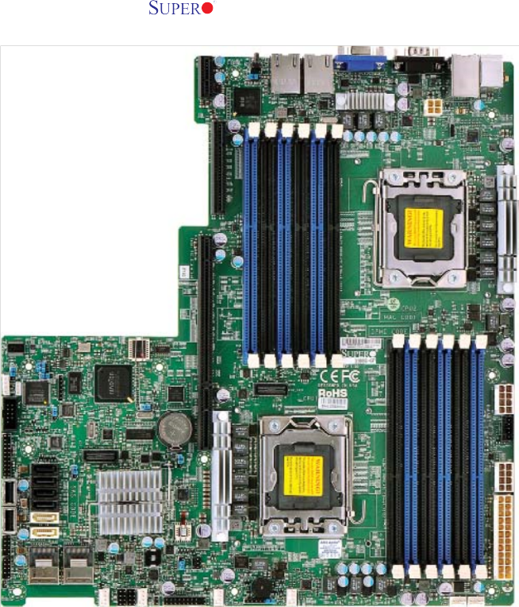
Примечание: Все изображения, представленные в данном руководстве, основаны на последней версии печатной платы, доступной на момент публикации руководства. Материнская плата, которую вы получили, может выглядеть или не выглядеть точно так же, как изображения, представленные в данном руководстве.
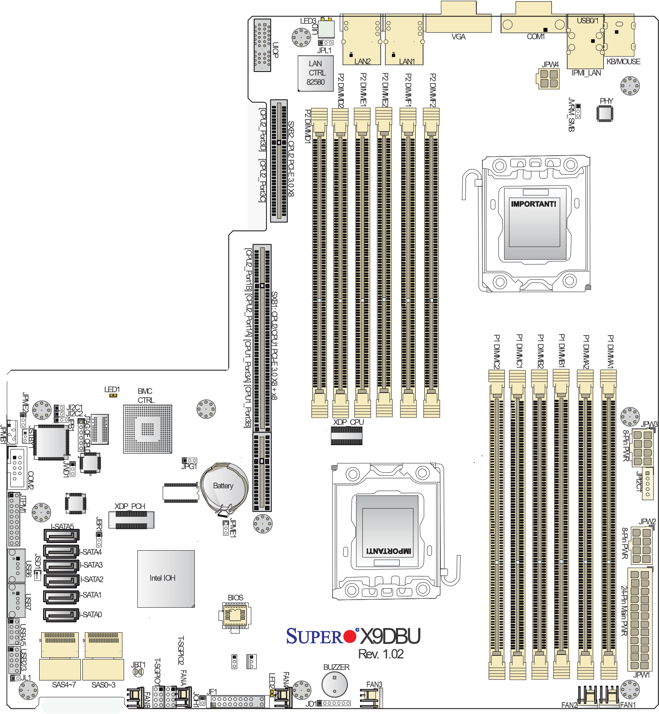
Примечание: Для получения последних обновлений по процессору и памяти, пожалуйста, посетите наш веб-сайт по адресу http://www.supermicro.com/products/motherboard/ для получения подробной информации.
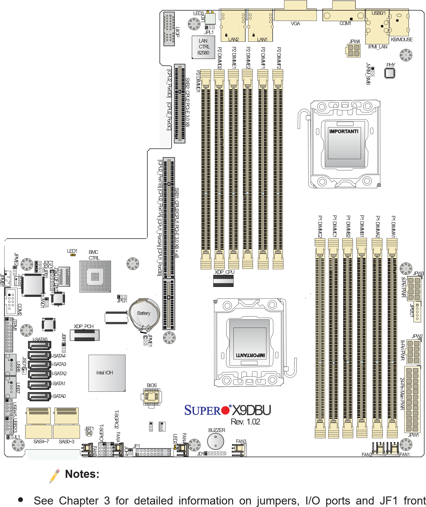
Примечания:
Подробная информация о перемычках, портах ввода-вывода и подключениях передней панели JF1 приведена в главе 3.
Обозначение « » указывает на расположение контакта «Pin 1» (первый контакт).
Компоненты без маркировки или документации (перемычки, светодиодные индикаторы, разъёмы, колодцы) предназначены только для тестирования.
Используйте только тот тип встроенной батареи CMOS, который указан производителем. Не устанавливайте встроенную батарею вверх ногами во избежание возможного короткого замыкания.
| Перемычка | Описание | Заводская настройка |
|---|---|---|
| JBT1 | Сброс CMOS | См. Главу 3 |
| JI2C1/JI2C2 | SMB к слотам PCI-E | Открыто (Normal) |
| JPB1 | Включение BMC (Baseboard Management Controller) | Контакты 1-2 (Enabled) |
| JPG1 | Включение VGA | Контакты 1-2 (Enabled) |
| JPL1 | Включение LAN1/LAN2 | Контакты 1-2 (Enabled) |
| JPME1 | Режим восстановления Management Engine (ME) | Контакты 1-2 (Normal) |
| JPME2 | Режим производства Management Engine (ME) | Контакты 1-2 (Normal) |
| JWD1 | Watch Dog (Контроль сбоев) | Контакты 1-2 (Reset) |
| Разъем | Описание |
|---|---|
| Buzzer | Встроенный динамик (пищалка) |
| COM1/COM2 | Разъемы COM-порта (на задней панели / дополнительный фронтальный) |
| FAN1~4, FANA/B | Разъемы вентиляторов (CPU/системные) |
| IPMB1 | 4-контактный разъем для внешнего IPMI-модуля (I2C) |
| I-SATA 0~5 | Разъемы SATA (Intel PCH): 0/1 — SATA 3.0, 2~5 — SATA 2.0 |
| JBAT1 | Разъем батарейки CMOS (см. Главу 4 по утилизации) |
| JD1 | Индикатор питания (PWR LED, контакты 1-3) / динамик (контакты 4-7) |
| JF1 | Разъем подключения передней панели |
| JL1 | Датчик вскрытия корпуса |
| JOH1 | Индикатор перегрева/остановки вентилятора |
| JPI2C1 | Разъем SMBus для мониторинга блока питания |
| JPW1 | 24-контактный разъем питания ATX (см. предупреждение на стр. 1-6) |
| JPW2~JPW3 | 8-контактные разъемы питания +12V (см. предупреждение на стр. 1-6) |
| JPW4 | 4-контактный разъем питания |
| JSTBY1 | Дежурное питание (Standby) |
| JTAG of CPLD | Разъем JTAG для программирования CPLD (Complex Programmable Logic Device) |
| JTPM1 | Разъем TPM (Trusted Platform Module) / Port 80 (диагностика POST) |
| JSD1 | Разъем питания SATA DOM (Device On Module) |
| KB/Mouse | Разъемы клавиатуры/мыши (PS/2) |
| LAN1/2 | Гигабитные Ethernet-порты 1 и 2 |
| (IPMI) LAN | Выделенный порт IPMI |
| SAS 0~3, 4~7 | Разъемы Serial-Link SATA/SAS (0-3 — SATA/SAS, 4-7 — SAS) |
| Разъем | Описание |
|---|---|
| SXB1 | Слоты PCI-E 3.0 x8 + x8 (для CPU1/CPU2) |
| SXB2 (CPU2) / SXB3 (CPU1) | Слоты PCI-E 3.0 x8 (SXB2 — CPU2, SXB3 — CPU1) |
| T-SGPIO 1/2 | Serial-Link General Purpose I/O (универсальные программируемые линии ввода-вывода) |
| UIOP | Проприетарный универсальный слот ввода-вывода (SMC) |
| USB 0/1 | USB-порты на задней панели (0 и 1) |
| USB 2/3, 4/5 | USB-разъемы для подключения к передней панели (2/3 и 4/5) |
| USB 6, USB7 | USB-порт типа A на передней панели (порт 6) |
| UID Switch | Кнопка UID (Unit Identifier — индикатор идентификации сервера) |
| VGA1 | VGA-порт на задней панели (1) / дополнительный разъем для фронтальной панели (2) |
| Индикатор | Описание | Состояние | Статус |
|---|---|---|---|
| LED1 | BMC Heartbeat (пульс BMC) | Зеленый: мигает | BMC работает нормально |
| LED2 | Standby PWR (дежурное питание) | Зеленый: горит | Дежурное питание включено |
| Синий: горит (Windows OS) | Работа в ОС Windows | ||
| Синий: мигает (Linux) | Работа в ОС Linux | ||
| LED3 | UID LED (идентификация) | Горит / мигает | Сервер идентифицирован |
Внимание! Во избежание повреждения материнской платы и компонентов используйте блок питания с поддержкой следующих разъемов:
Обязательно подключите:
Если индикаторы ведут себя некорректно (например, не горят или мигают с ошибками), проверьте подключение питания и состояние BMC/IPMI.
Встроенный контроллер памяти поддерживает до 384 ГБ DDR3:
Виртуализация: VT-x, VT-d, VT-c
Примечание: Актуальную информацию о совместимости CPU/памяти см. на supermicro.com.
SATA:
SAS/SATA:
Последовательные порты (COM): 2× RS-232 (UART 16550)
Клавиатура/мышь: USB/PS/2 на задней панели
Графика: VGA-выход
UIO-слоты:
Задняя панель: 2× USB 2.0 (порты 0/1)
Передняя панель:
Контроль напряжений: 1.5V, 1.8V, +3.3V, +5V, +5V Standby
Термозащита CPU:
Управление вентиляторами:
Материнская плата X9DBU-3F/X9DBU-iF, основанная на процессорах Intel E5-2400 (сокет B2) и чипсете C602/C606, обеспечивает высокую производительность и функциональность для двухпроцессорных платформ.
Технология Intel QuickPath Interconnect (QPI):
Функции чипсета C602/C606:
BIOS позволяет настроить реакцию системы на восстановление электропитания:
Материнская плата оснащена встроенной системой мониторинга:
Постоянно отслеживаются:
Важно: Для предотвращения перегрева обеспечьте достаточный воздушный поток.
В Windows/Linux утилита SuperDoctor III/II уведомляет о:
ACPI (Advanced Configuration and Power Interface) — стандарт управления питанием:
Обязательные разъемы:
Ток 1.5A на порты Ethernet.
Используйте качественный БП с сертификацией ATX 2.02+/SSI.
В зонах с нестабильным напряжением:
Внимание! Неправильное подключение питания может повредить плату!
2 UART-порта (16550-совместимые) с поддержкой:
Управление питанием ACPI (через SMI/SCI) для снижения энергопотребления.
Intel Intelligent Power Node Manager (IPNM):
Контроль температуры и энергопотребления в реальном времени.
Требования:
Зависит от версии ME-прошивки (1.5 или 2.0).
Management Engine (ME):
Удаленное управление через KVM-редирект (клавиатура/видео/мышь).
Интерфейсы:
Сетевые подключения:
Для оптимальной работы соблюдайте рекомендации по питанию и охлаждению!
Управление через IPMI 2.0:
Интерфейсы расширения:
Мониторинг оборудования:
Безопасность и управление:
RMCP+ — защищенный протокол для IPMI.
Поддержка инструментов:
Для настройки IPMI обратитесь к IPMI User’s Guide.
Контроллер WPCM450R обеспечивает полный цикл мониторинга и управления сервером, включая аварийные оповещения и удаленный доступ, даже без загруженной ОС.
Перед установкой компонентов внимательно прочтите все предупреждения. При возникновении вопросов обратитесь в техническую поддержку Supermicro.
⚠ Предупреждение!
⚠ Предупреждение!
Электростатические разряды (ESD) могут повредить компоненты.
Для дальнейших шагов по установке обратитесь к руководству.
Подключайте кабель питания в последнюю очередь и всегда отключайте его перед изменением конфигурации.
Устанавливайте процессор до монтажа кулера.
Материнская плата должна быть закреплена в корпусе перед установкой кулера.
Теплопакет (TDP) процессора не должен превышать максимальные значения для платы, кулера и корпуса (см. руководство к шасси).
При покупке платы без процессора убедитесь, что:
Откройте сокет:
Извлеките защитную крышку и берите процессор только за края (северный и южный).
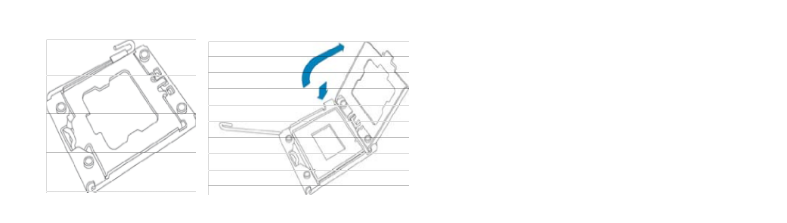
Совместите ключи:
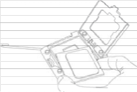
Установите процессор:
Проверьте правильность установки:
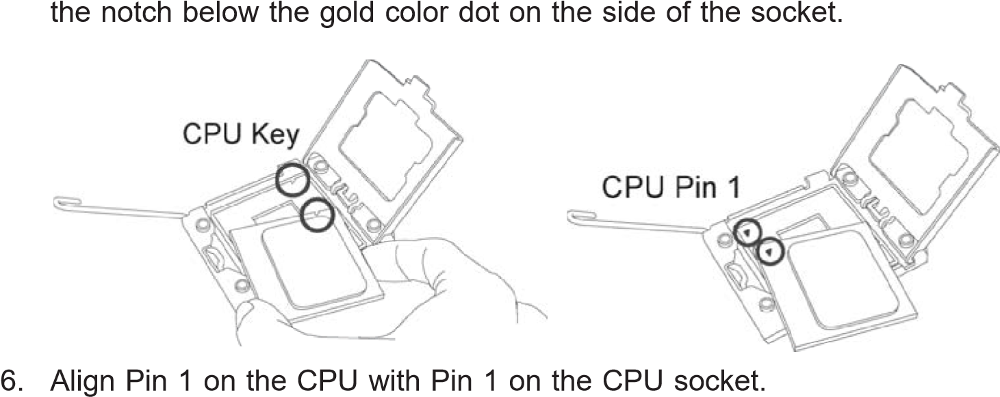
Закройте нагрузочную пластину и зафиксируйте рычаг.
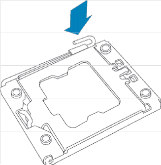
⚠ Важно!
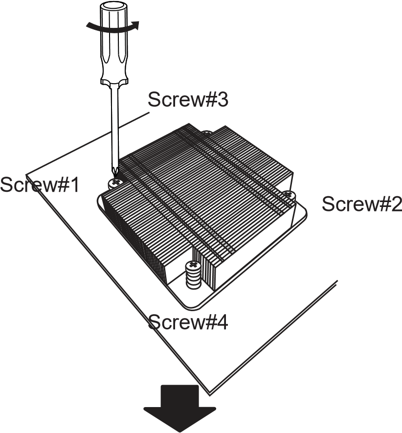
Установка пассивного кулера⚠ Не рекомендуется без необходимости!
Отключите питание системы.
Поверните штифты против часовой стрелки и вытащите их.
Аккуратно покачайте кулер из стороны в сторону, чтобы ослабить (без чрезмерного усилия!).
Снимите кулер с процессора.
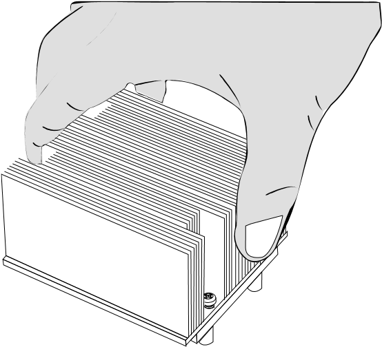
Перед повторной установкой:
Для проверки совместимости процессоров см. раздел «Поддержка CPU» в руководстве или на supermicro.com.
Определите порядок установки
Подготовьте слот
Разведите фиксаторы по краям слота наружу (в открытое положение).
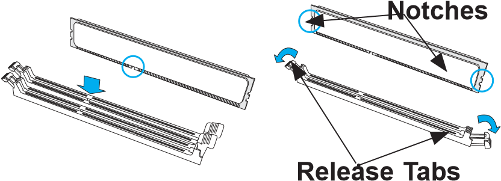
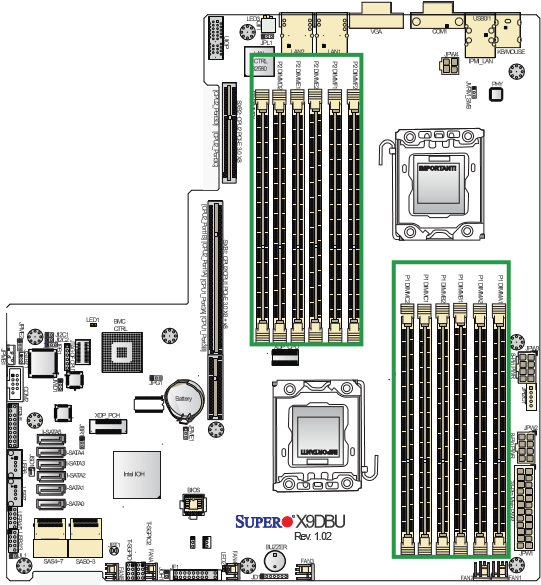
Совместите ключи
Установите модуль
Двумя руками равномерно надавите на оба края модуля до щелчка.
Фиксаторы должны автоматически закрыться, надежно закрепив модуль.
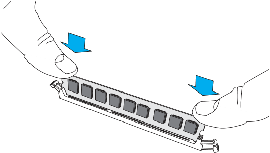
Откройте фиксаторы
Извлеките модуль
Важно! После установки проверьте, что все модули распознаются в BIOS. Если система не запускается, убедитесь, что память полностью зафиксирована в слотах.
Откройте фиксаторы
Извлеките модуль
Типы памяти:
Максимальный объем: 384 ГБ
Частоты: 800/1066/1333/1600 МГц
Количество слотов: 12 (по 6 на каждый процессор)
Важно: Актуальный список совместимых модулей смотрите на supermicro.com.
| Процессор | Соответствующие слоты DIMM |
|---|---|
| CPU1 | P1-DIMMA1, P1-DIMMA2, P1-DIMMB1, P1-DIMMB2, P1-DIMMC1, P1-DIMMC2 |
| CPU2 | P2-DIMMD1, P2-DIMMD2, P2-DIMME1, P2-DIMME2, P2-DIMMF1, P2-DIMMF2 |
| Кол-во CPU + DIMM | Рекомендуемые слоты |
|---|---|
| 1 CPU + 2 DIMM | P1-DIMMA1, P1-DIMMB1 |
| 1 CPU + 4 DIMM | P1-DIMMA1, P1-DIMMB1, P1-DIMMA2, P1-DIMMB2 |
| 1 CPU + 6 DIMM | Все слоты CPU1 |
| 2 CPU + 4 DIMM | P1-DIMMA1, P1-DIMMB1, P2-DIMMD1, P2-DIMME1 |
| 2 CPU + 6 DIMM | P1-DIMMA1, P1-DIMMB1, P1-DIMMC1, P2-DIMMD1, P2-DIMME1, P2-DIMMF1 |
| 2 CPU + 12 DIMM | Все слоты CPU1 + CPU2 |
Поддерживаемые объемы: 1GB, 2GB, 4GB, 8GB
Частоты: 1066/1333 МГц (зависит от напряжения 1.35V/1.5V)
Ограничения:
Поддерживаемые объемы: 1GB–32GB
Частоты: до 1600 МГц (1DPC)
Особенности:
Для проверки совместимости конкретных модулей используйте Memory List.
Memory Configuration).
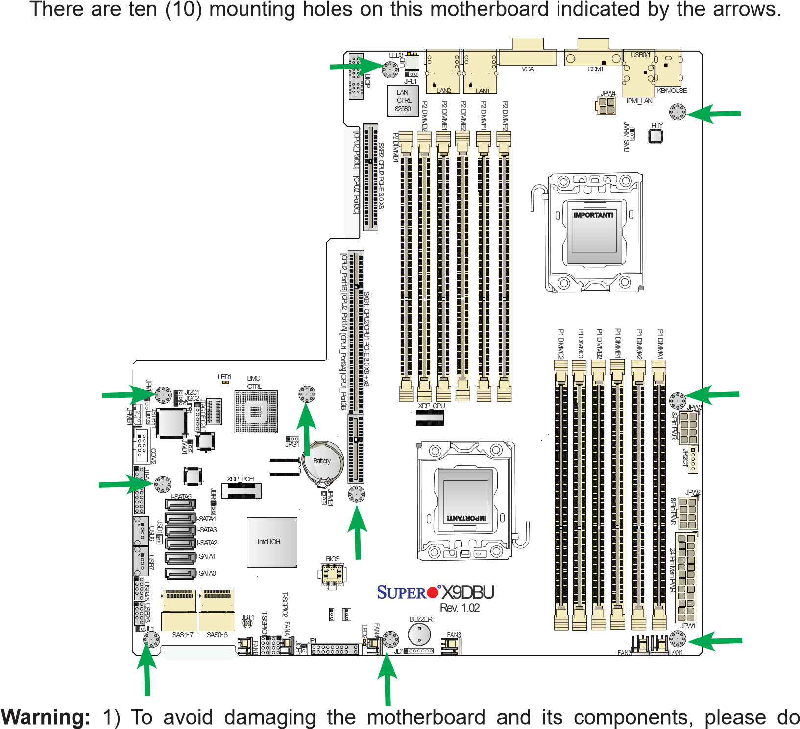
Установите заглушку I/O в корпус.
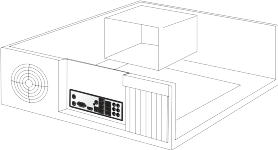
Совместите монтажные отверстия платы с отверстиями в шасси.
Закрепите металлические стойки (обеспечивают заземление).
Аккуратно разместите плату, избегая касания компонентов.
Зафиксируйте винтами #6 все отверстия (см. схему расположения).
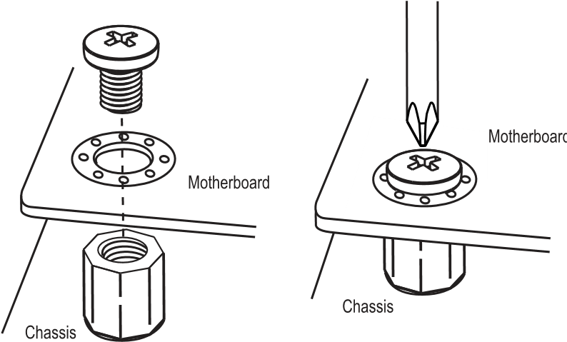
Внимание! Изображения в руководстве могут отличаться от вашей комплектации.
Разъемы задней панели материнской платы X9DBU-3F/X9DBU-iF
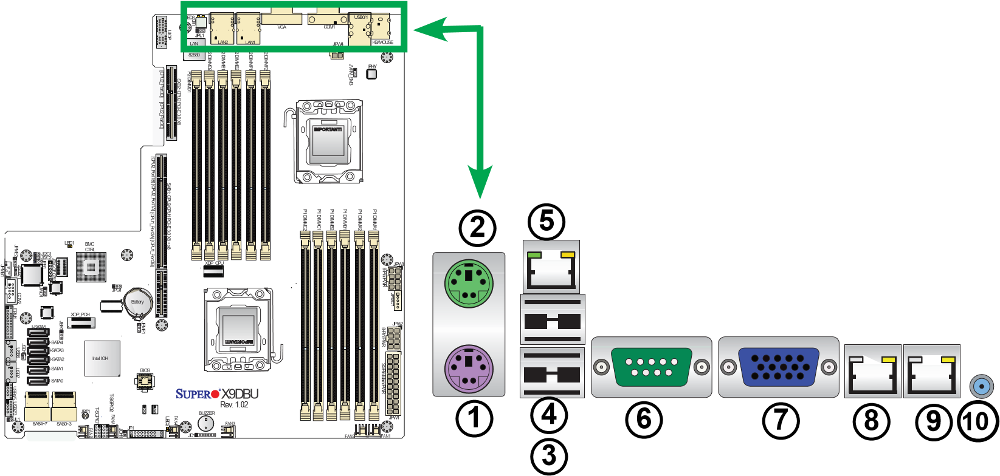
PS/2 Keyboard (Фиолетовый)
PS/2 Mouse (Зеленый)
USB 2.0 Port 0 (Черный)
USB 2.0 Port 1 (Черный)
IPMI LAN (Выделенный порт)
COM Port 1 (Бирюзовый)
VGA Port (Синий)
Gigabit LAN 1
Gigabit LAN 2
UID Switch (Кнопка идентификации)
Для оптимальной работы рекомендуется:
Для полной схемы распиновки см. раздел "Connector Definitions" в руководстве.
| Контакт | Клавиатура | Мышь |
|---|---|---|
| 1 | Данные (KB Data) | Данные (Mouse Data) |
| 2 | Нет подключения (NC) | Нет подключения (NC) |
| 3 | Земля (Ground) | Земля (Ground) |
| 4 | Питание +5V | Питание +5V |
| 5 | Тактовый сигнал (KB Clock) | Тактовый сигнал (Mouse Clock) |
| 6 | Нет подключения (NC) | Нет подключения (NC) |
Примечание:
- Линия питания (+5V) защищена PTC-предохранителем (ограничение тока 1.5А).
- Фиолетовый порт — клавиатура, зеленый — мышь.
| Контакт | Назначение |
|---|---|
| 1 | +5V |
| 2 | Данные (PO-) |
| 3 | Данные (PO+) |
| 4 | Земля (Ground) |
| 5 | Не используется |
| Контакт | USB 2/4/6 | USB 3/5 |
|---|---|---|
| 1 | +5V | +5V |
| 2 | Данные (PO-) | Данные (PO-) |
| 3 | Данные (PO+) | Данные (PO+) |
| 4 | Земля (Ground) | Земля (Ground) |
| 5 | Ключ (NC) | Ключ (NC) |
Важно:
- USB 6/7 — это разъемы Type A на самой плате (для подключения фронтальных портов через кабель).
- При подключении соблюдайте полярность: PO+ (белый провод), PO- (зеленый провод).
PS/2:
USB:
Безопасность:
Для дополнительных схем см. раздел "Connector Definitions" в руководстве к материнской плате.
Два COM-порта (COM1 и COM2) расположены на материнской плате. COM1 расположен на задней панели ввода/вывода. COM2, расположенный рядом с разъёмом TPM/порта 80, обеспечивает доступ с передней панели.
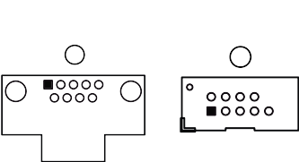
См. таблицу
| Контакт | Обозначение | Описание | Направление |
|---|---|---|---|
| 1 | DCD | Data Carrier Detect | Вход |
| 2 | RXD | Received Data | Вход |
| 3 | TXD | Transmitted Data | Выход |
| 4 | DTR | Data Terminal Ready | Выход |
| 5 | GND | Signal Ground | - |
| 6 | DSR | Data Set Ready | Вход |
| 7 | RTS | Request To Send | Выход |
| 8 | CTS | Clear To Send | Вход |
| 9 | RI | Ring Indicator | Вход |
| 10 | N/A | Не используется | - |
Консольное соединение (без управления потоком):
xxxxxxxxxxTXD(3) - RXD(2)RXD(2) - TXD(3)GND(5) - GND(5)
Полное соединение с управлением потоком:
xxxxxxxxxxДобавить:RTS(7) - CTS(8)CTS(8) - RTS(7)DTR(4) - DSR(6)
Примечание: COM1 (задняя панель) и COM2 (внутренний разъем) имеют идентичную распиновку. Для работы портов требуется драйвер Super I/O (Nuvoton W83527).
Один видеопорт (VGA1) расположен рядом с COM-портом 1 на объединительной плате ввода/вывода. Расположение см. на схеме платы ниже.
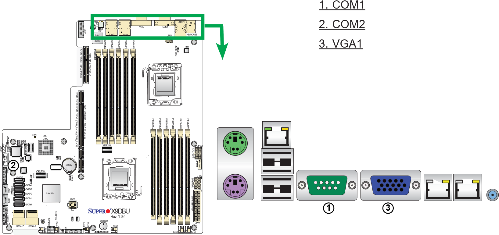
Два порта Gigabit Ethernet (LAN1/2) расположены на объединительной плате ввода/вывода материнской платы для обеспечения Ethernet-подключений. Кроме того, выделенный порт локальной сети IPMI расположен над портом USB.
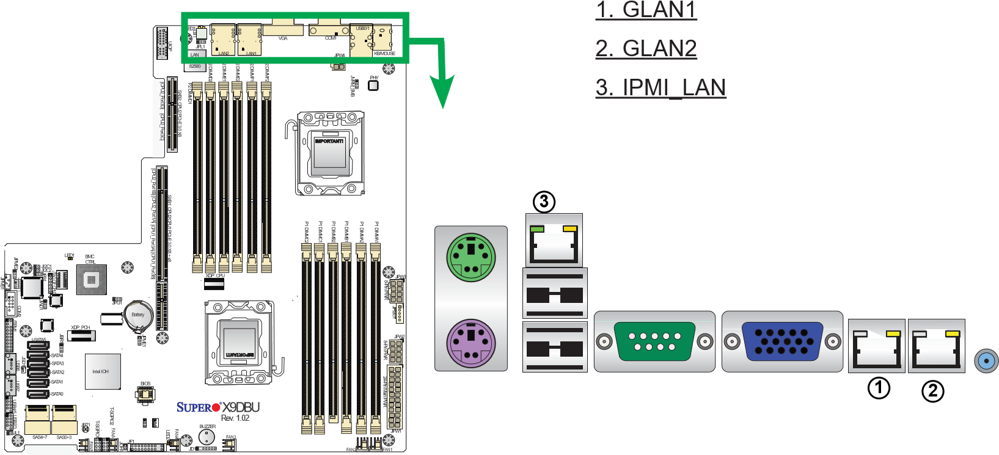
| Pin | Обозначение | Тип | Описание |
|---|---|---|---|
| 1 | P2V5SB | Питание | Дежурное +2.5V |
| 2 | TD0+ | Данные | Трансмиссия данных 0 (положительный) |
| 3 | TD0- | Данные | Трансмиссия данных 0 (отрицательный) |
| 4 | TD1+ | Данные | Трансмиссия данных 1 (положительный) |
| 5 | TD1- | Данные | Трансмиссия данных 1 (отрицательный) |
| 6 | TD2+ | Данные | Трансмиссия данных 2 (положительный) |
| 7 | TD2- | Данные | Трансмиссия данных 2 (отрицательный) |
| 8 | TD3+ | Данные | Трансмиссия данных 3 (положительный) |
| 9 | TD3- | Данные | Трансмиссия данных 3 (отрицательный) |
| 10 | SGND | Земля | Сигнальная земля |
| Pin | Обозначение | Тип | Описание |
|---|---|---|---|
| 11 | Act LED | Выход | Индикатор активности (зеленый) |
| 12 | P3V3SB | Питание | Дежурное +3.3V |
| 13 | Link 100 LED | Выход | Индикатор 100 Мбит (желтый) |
| 14 | Link 1000 LED | Выход | Индикатор 1 Гбит (желтый) |
| 15 | Ground | Земля | Общая земля |
| 16 | Ground | Земля | Дублирующая земля |
| 17 | Ground | Земля | Дополнительная земля |
| 18 | Ground | Земля | Резервная земля |
Трансформаторная развязка:
Индикация состояния:
Питание:
При использовании кастомных кабелей соблюдайте витую пару:
Для длинных линий (>50м) используйте CAT6
Диагностика проблем:
xxxxxxxxxx# Проверка связи через ethtoolethtool eth0Важно! Контакты 15-18 (Ground) должны быть соединены с экраном кабеля для защиты от помех.
UID Switch (кнопка):
Два светодиода (синий/голубой):
Однократное нажатие кнопки UID:
Повторное нажатие:
| Контакт | Назначение | Цвет кабеля |
|---|---|---|
| 19 | Анод (+) | Синий |
| 20 | Катод (-) | Белый |
Примечание: UID также активирует подсветку кнопки питания в некоторых корпусах Supermicro.
| Pin # | Назначение | Описание | Цвет провода (типовой) |
|---|---|---|---|
| 1 | Ground | Общий провод | Черный |
| 2 | Ground | Дублирующий общий провод | Черный |
| 3 | Button In | Сигнальный вход кнопки (+3.3V) | Синий/Красный |
| 4 | Ground | Дополнительный общий провод | Черный |
Трехпроводная схема (несмотря на 4 контакта):
Логика работы:
Рекомендации:
xxxxxxxxxx[Кнопка UID]│├───[Pin 3] Button In (сигнал)│└───[Pins 1,2,4] Ground
Кнопка не работает:
Ложные срабатывания:
Важно! UID switch работает независимо от состояния питания системы (через BMC). Для полной функциональности требуется подключение разъема JPW1 (основное питание).
| Цвет/Состояние | Операционная система | Статус системы |
|---|---|---|
| Синий: горит | Windows OS | Сервер идентифицирован |
| Синий: мигает | Linux OS | Сервер идентифицирован |
Windows ОС:
Постоянная синяя подсветка
Активируется:
Linux ОС:
Мигающий синий индикатор (1 Гц)
Особенности реализации:
Общая логика:
Индикация сохраняется после перезагрузки
Работает даже при выключенном основном питании (за счет BMC)
Совместима с:
xxxxxxxxxx# Включить индикациюipmitool raw 0x3c 0x0a 0x01
# Выключить индикацию ipmitool raw 0x3c 0x0a 0x00
# Проверить статусipmitool raw 0x3c 0x0bИдентификация в стойке:
Автоматизированный мониторинг:
Интеграция с DCIM:
Примечание: В некоторых версиях BIOS можно настроить чувствительность кнопки и поведение светодиода через раздел "BMC Configuration".
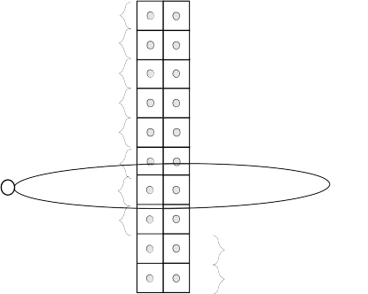
Синхронная активация:
Однократное нажатие физической кнопки UID включает:
Повторное нажатие отключает оба индикатора
Характеристики индикаторов:
| Расположение | Цвет | Ток | Управление |
|---|---|---|---|
| Задняя панель | Синий | 15мА | Прямое управление BMC |
| Передняя панель | Синий | 10мА | Через разъем FP (контакты 19-20) |
Командная строка:
xxxxxxxxxx# Активировать UIDipmitool raw 0x3C 0x0A 0x01 0x00
# Деактивировать UIDipmitool raw 0x3C 0x0A 0x00 0x00
# Проверить статусipmitool raw 0x3C 0x0BВеб-интерфейс:
Подключение переднего индикатора:
xxxxxxxxxxКонтакт 19: +3.3V (анод)Контакт 20: Земля (катод)
Цепь кнопки:
xxxxxxxxxx[Кнопка UID]├── Подтяжка к +3.3V (внутри BMC)└── Замыкание на землю при нажатии
Индикаторы не горят:
Кнопка не работает:
Для дата-центров:
Интеграция:
Примечание: Состояние UID сохраняется после перезагрузки и не сбрасывается при рестарте BMC. Подробности в "Руководстве по прошивке BMC" на Supermicro Documentation.
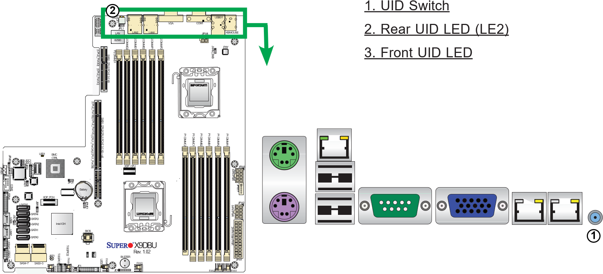
Разъём JF1 содержит контакты для подключения различных кнопок и индикаторов, которые обычно расположены на панели управления в передней части корпуса. Эти разъёмы разработаны специально для использования с серверными корпусами Supermicro. Описание различных кнопок и светодиодных индикаторов панели управления см. на рисунке ниже.
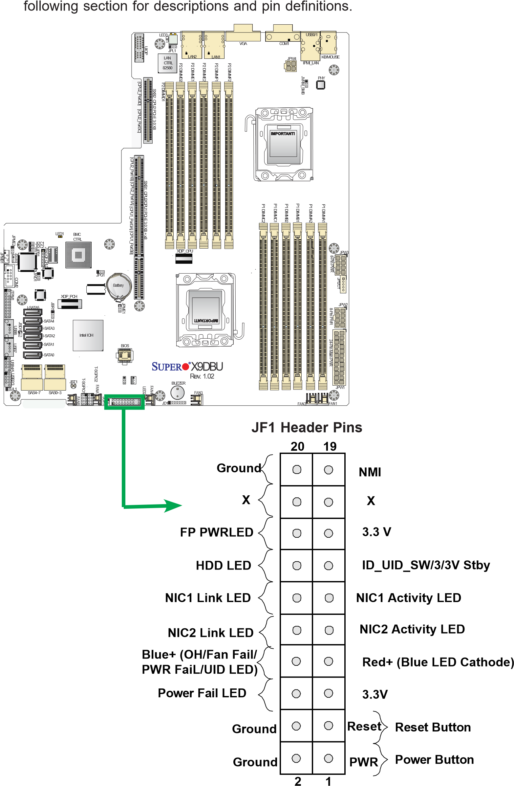
| Контакт | Назначение | Тип сигнала | Цвет провода (типовой) |
|---|---|---|---|
| 19 | NMI_SW# | Активный низкий | Красный/Желтый |
| 20 | Ground | Земля | Черный |
Назначение кнопки:
Генерирует немаскируемое прерывание (Non-Maskable Interrupt)
Принудительно переводит систему в режим отладки
Используется для:
Электрические параметры:
Схема подключения:
xxxxxxxxxx[Кнопка NMI]├── Контакт 19 (NMI_SW#)└── Контакт 20 (GND)
Требования к кнопке:
Защита от случайного нажатия:
Рекомендуется использовать углубленную кнопку
Возможна блокировка через BIOS:
xxxxxxxxxx# В настройках BMC:ipmitool raw 0x3C 0x0C 0x01 0x00Диагностика:
Проверка работоспособности:
xxxxxxxxxx# Через IPMI:ipmitool chassis status | grep NMIВажно! Для систем с критической нагрузкой рекомендуется отключать физический доступ к NMI-кнопке. Альтернатива - активация NMI только через IPMI.
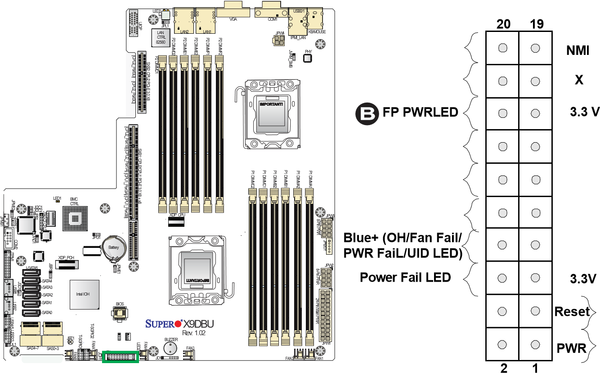
| Контакт | Назначение | Характеристики |
|---|---|---|
| 15 | +3.3V | Дежурное питание |
| 16 | PWR LED | Анод светодиода (зеленый) |
Особенности:
| Контакт | Назначение |
|---|---|
| 13 | HDD LED+ (красный) |
| 14 | Ground |
Логика работы:
| Контакт | Назначение |
|---|---|
| 11 | NIC1 Link LED (желтый) |
| 12 | NIC1 Activity LED |
| 9 | NIC2 Link LED |
| 10 | NIC2 Activity LED |
Цветовая маркировка:
| Контакт | Назначение | Особенности |
|---|---|---|
| 1-2 | Power Button | Мягкое выключение |
| 3-4 | Reset Button | Аппаратный сброс |
| 7-8 | UID Switch | Синий индикатор |
Кнопки:
Светодиоды:
xxxxxxxxxx[Передняя панель]├── Power LED: 15(+) - 16(-)├── HDD LED: 13(+) - 14(-)├── Power SW: 1-2└── Reset SW: 3-4
Для кастомных корпусов:
Диагностика:
xxxxxxxxxx# Проверка кнопки питанияipmitool chassis power statusВажно: При подключении соблюдайте полярность светодиодов. Неправильное подключение может повредить цепи управления.
| Контакт | Назначение | Цвет провода | Характеристики |
|---|---|---|---|
| 13 | HDD LED+ | Красный | Анод светодиода |
| 14 | Ground | Черный | Катод (земля) |
Особенности работы:
| Контакт | Индикатор (B/C) | Цвет LED | Режимы работы |
|---|---|---|---|
| 11 | Link LED (B) | Желтый | Постоянный свет: подключение |
| 12 | Activity LED (C) | Зеленый | Мигание: передача данных |
| Контакт | Индикатор (D/E) | Цвет LED | Режимы работы |
|---|---|---|---|
| 9 | Link LED (D) | Желтый | Постоянный свет |
| 10 | Activity LED (E) | Зеленый | Мигание |
Совместимость разъемов:
Электрические параметры:
Рекомендации по подключению:
xxxxxxxxxx[HDD LED]13 (+) ----[LED]---- 14 (-)
[NIC1]11 (Link) ----[Желтый LED]---- Ground12 (Activity) ----[Зеленый LED]---- GroundИндикаторы не работают:
Проверить полярность подключения
Убедиться в наличии дежурного питания (+3.3VSB)
Проверить настройки в BIOS:
xxxxxxxxxx# Для IPMI-управляемых индикаторовipmitool raw 0x3C 0x09 0x01Слабая яркость:
Важно! Для корректной работы всех индикаторов необходимо подключение основного 24-контактного разъема питания. Индикаторы активности накопителей требуют включенного состояния системы (не работают в дежурном режиме).
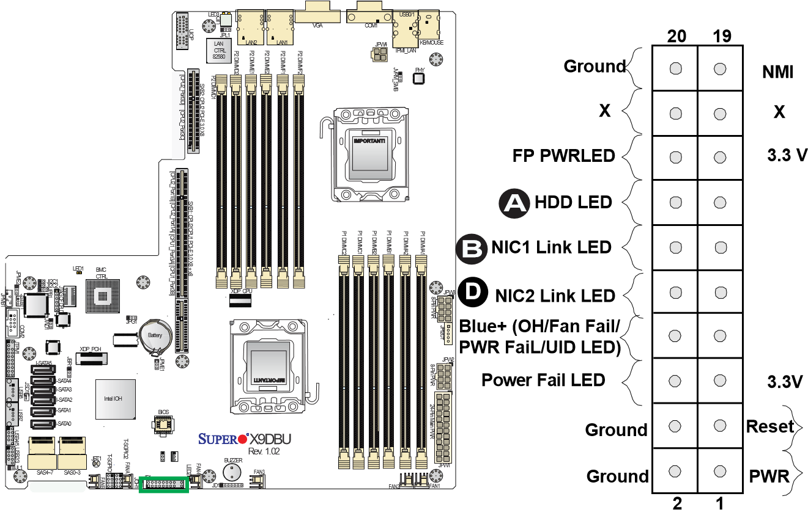
| Контакт | Назначение | Цвет LED | Состояния индикации |
|---|---|---|---|
| 7 | +3.3V (Vcc) | - | Питание индикатора |
| 8 | OH/Fan Fail Signal | Красный | Выкл: Норма Горит: Перегрев Мигает: Отказ вентилятора |
Логика работы:
Активируется при:
| Контакт | Назначение | Цвет LED | Условия активации |
|---|---|---|---|
| 5 | +3.3V Standby | - | Дежурное питание |
| 6 | PWR Fail Signal | Красный | Горит: Потеря основного питания (PWR_OK ↓) |
Критические параметры:
Реагирует на:
xxxxxxxxxx[Аварийные LED]├── OH/Fan: 7(+) --[Красный LED]-- 8(-)└── PWR Fail: 5(+) --[Красный LED]-- 6(-)Требования к LED:
Диагностика:
xxxxxxxxxx# Проверка статуса через IPMI:ipmitool sensor list | grep -E "Temp|Fan"ipmitool power statusНастройки BIOS:
Advanced → Hardware MonitorFan Fail SensitivityДля серверных корпусов:
При ложных срабатываниях:
Проверить контакт термодатчиков
Калибровка вентиляторов:
xxxxxxxxxxipmitool raw 0x30 0x70 0x66 0x01 0x00 0x64Важно! Индикатор PWR Fail требует подключенного 24-контактного разъема ATX. Для OH/Fan Fail необходимо активное состояние BMC (даже при выключенном сервере).
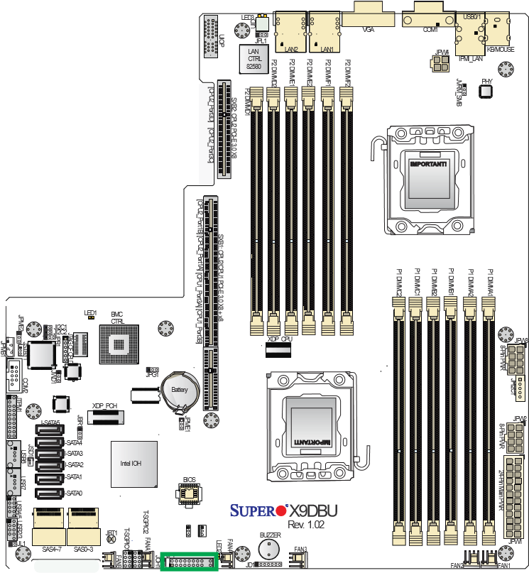
| Контакт | Назначение | Характеристики |
|---|---|---|
| 3 | Reset Signal | Активный низкий уровень |
| 4 | Ground | Общий провод |
Функционал:
| Контакт | Назначение | Режимы работы |
|---|---|---|
| 1 | PWRBTN# | Активный низкий уровень |
| 2 | Ground | Общий провод |
Особенности:
Кратковременное нажатие:
Долгое нажатие (4+ секунды):
| Контакт | Назначение | Цветовая маркировка |
|---|---|---|
| 15 | +3.3V Standby | Зеленый провод |
| 16 | PWR LED | Белый провод |
Логика индикации:
xxxxxxxxxx[Передняя панель]├── Кнопки:│ ├── Power: 1(PWRBTN#) --[Кнопка]-- 2(GND)│ └── Reset: 3(RESET#) --[Кнопка]-- 4(GND)│├── Индикаторы:│ ├── Power LED: 15(+3.3V) --[LED]-- 16(PWR_LED)│ ├── HDD LED: 13(+) --[LED]-- 14(GND)│ ├── NIC1: 11(LINK) --[LED]-- GND│ │ 12(ACT) --[LED]-- GND│ └── NIC2: 9(LINK) --[LED]-- GND│ 10(ACT) --[LED]-- GND│└── Аварийные LED: ├── OH/Fan: 7(+3.3V) --[LED]-- 8(OH_SIG) └── PWR Fail: 5(+3.3V) --[LED]-- 6(PWRFAIL#)Кнопки:
Защитные механизмы:
Для кастомных корпусов:
Диагностика:
xxxxxxxxxx# Проверка кнопок через IPMI:ipmitool chassis identifyipmitool power statusВажно! При подключении соблюдайте полярность светодиодов. Для кнопок полярность не имеет значения. Все сигнальные линии защищены самовосстанавливающимися предохранителями.
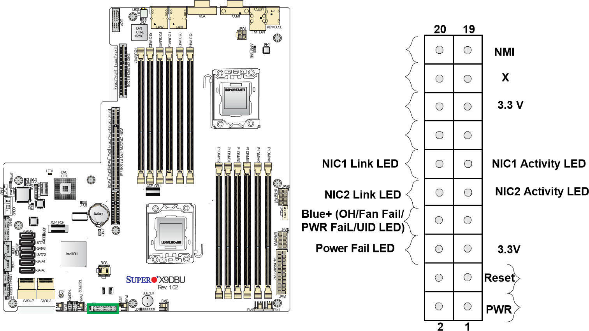
Светодиод жесткого диска ID_UID_SW/3/3V Stby Красный+ (катод синего светодиода) Кнопка сброса заземления A Кнопка питания заземления B
2-7
Подключение кабелей
Разъемы питания
На материнской плате расположены два 4-контактных разъема основного питания (JPW1), два 8-контактных разъема питания процессора (JPW2/JPW3) и 4-контактный разъем вспомогательного питания. Эти разъемы питания соответствуют спецификации SSI EPS 12 В. Эти разъемы питания также должны быть подключены к вашему блоку питания. См. таблицу справа для получения информации о назначении контактов.
Предупреждение: Во избежание повреждения материнской платы и компонентов используйте блок питания с поддержкой 24-контактного, двух 8-контактных и одного 4-контактного разъема питания. Обязательно подключите 24-контактный и два 8-контактных разъёма питания к блоку питания для обеспечения надлежащего питания вашей системы. 4-контактный разъём питания не является обязательным, однако Supermicro рекомендует также подключить его для оптимальной подачи питания.
A. JPW1: 24-pin ATX
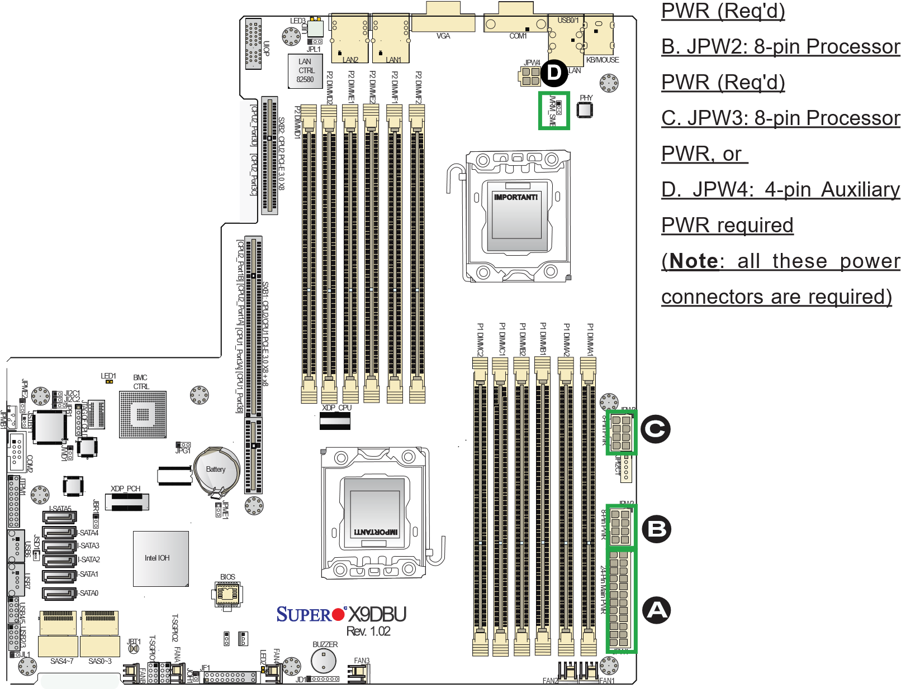
| Контакты | Назначение | Цвет провода (стандарт ATX) |
|---|---|---|
| 1-4 | Ground | Чёрный |
| 5-8 | +12V | Жёлтый |
Требования к питанию:
Особенности подключения:
Обязательно для систем с:
Совместимость:
xxxxxxxxxx[Блок питания] ├── Жёлтый (+12V) → Контакты 5-8 └── Чёрный (GND) → Контакты 1-4Для высоконагруженных систем:
Диагностика проблем:
xxxxxxxxxx# Проверка напряжений через IPMI:ipmitool sensor list | grep -i "12V"Меры безопасности:
Важно! Непереключение 8-pin разъемов может привести к:
- Нестабильности системы под нагрузкой
- Преждевременному отключению
- Перегреву разъемов питания
Для систем с разгоном рекомендуется мониторинг напряжений через:
xxxxxxxxxxwatch -n 1 "ipmitool sensor list | grep -E '12V|VRM'"
| Разъем | Назначение | Особенности |
|---|---|---|
| FAN1-4 | Системные вентиляторы | PWM-управление (4-pin) |
| FAN A/B | Процессорные вентиляторы | Поддержка до 2A (24W) |
Ключевые характеристики:
Совместимость: Работают с 3-pin вентиляторами (без регулировки скорости)
Управление: Через IPMI/BIOS с шагом 0.1% (для 4-pin PWM)
Распиновка:
xxxxxxxxxx1: Ground (чёрный)2: +12V (жёлтый)3: Tachometer (зелёный)4: PWM Control (синий)
Рекомендации:
xxxxxxxxxx# Настройка через IPMI:ipmitool raw 0x30 0x70 0x66 0x01 0x00 <скорость_0-100>| Контакт | Назначение |
|---|---|
| 1 | Сигнал |
| 2 | Ground |
Логика работы:
Замыкание на землю при открытии корпуса
Генерирует событие в:
Настройка в BIOS:
xxxxxxxxxxAdvanced → HW Monitor → Chassis Intrusion [Enabled/Reset]
| Контакт | Назначение | Типовые сигналы |
|---|---|---|
| + | 5V | 1 короткий: POST успешен |
| - | Ground | Длинные гудки: Ошибки RAM |
Подключение:
xxxxxxxxxx[Система охлаждения]├── CPU_FAN1: PWM-вентилятор процессора├── SYS_FAN2: Корпусной вентилятор└── FAN_A/B: Дополнительные кулеры
[Безопасность]├── JL1: Датчик вскрытия → Химпровод корпуса└── Buzzer: Контаты 1-4 разъема PANELВажно! Для оптимального охлаждения:
Подключайте процессорные вентиляторы к FAN A/B
Настройте кривые в BIOS:
xxxxxxxxxxAdvanced → Hardware Monitor → Fan Profile [Optimal]
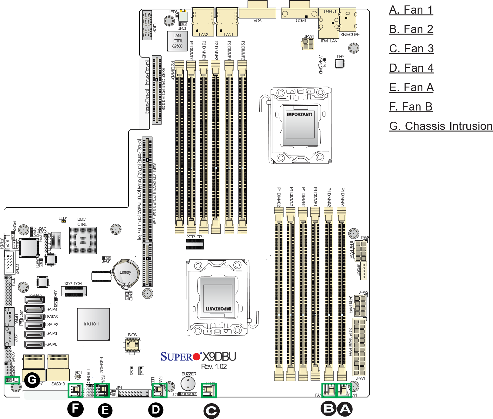
| Контакт | Назначение | Характеристики сигналов |
|---|---|---|
| 1 | Анод (+) | Питание +5V (±10%) |
| 2 | Катод (-) | Управляющий сигнал (открытый коллектор) |
Коды сигналов:
Важно: Максимальная нагрузка – 50 мА. Не подключайте низкоомные динамики!
| Контакт | Назначение | Логика работы |
|---|---|---|
| 1 | +3.3V | Питание светодиода |
| 2 | OH/FAN_FAIL# | Горит: Перегрев (>90°C) Мигает: Отказ вентилятора |
Настройка в BIOS:
xxxxxxxxxxAdvanced → HW Monitor → - OH Threshold: [85-95°C] - Fan Fail RPM: [300-500] | Контакт | Назначение | Стандарт |
|---|---|---|
| 1-20 | LPC-интерфейс | TPM 2.0 (ISO/IEC 11889) |
| 9,11,13 | Port 80 | POST-коды диагностики |
Функционал:
xxxxxxxxxx[Безопасность]├── SP1: │ ├── 1(+) → Красный провод│ └── 2(-) → Чёрный провод└── JOH1: ├── 1 → +3.3V (жёлтый) └── 2 → Сигнальный (зелёный)
[TPM]└── JTPM1: ├── 1: LPC_AD0 └── 20: VCC_3.3VДля аудио-диагностики:
ipmitool raw 0x6 0x4При перегреве:
xxxxxxxxxx# Принудительное охлаждение:ipmitool raw 0x30 0x70 0x66 0x01 0x00 0x64Для TPM:
Security → TPM State [Enabled]Внимание! Контакты JOH1 чувствительны к статике. Перед подключением LED сбросьте заряд, коснувшись корпуса.
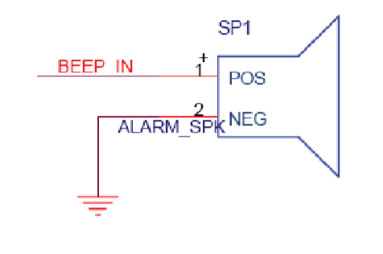
Разъем JOH1 предназначен для подключения светодиодного индикатора, который сигнализирует о перегреве корпуса и сбое работы вентиляторов. При возникновении неисправности вентилятора светодиод начинает мигать.Модуль доверенной платформы (TPM) и порт 80
Разъем JTPM1 обеспечивает поддержку:Модуля TPM (Trusted Platform Module)Порта 80Мониторинга состояния вентилятора и перегреваСостояние индикатора и соответствующие сообщенияСостояние индикатораСообщениеПостоянный светПерегревМигающий светСбой вентилятораНазначение контактов разъема TPM/Port 80
Группа 1:
Контакт 1 — LCLK (тактовый сигнал)
Контакт 2 — GND (земля)
Контакт 3 — LFRAME# (сигнал фрейма)
Контакт 4 — <( KEY )> (ключ)
Контакт 5 — LRESET# (сигнал сброса)
Контакт 6 — +5V (питание)
Контакт 7 — LAD 3 (линия данных 3)
Контакт 8 — LAD 2 (линия данных 2)
Группа 2:
Контакт 9 — +3.3V (питание)
Контакт 10 — LAD1 (линия данных 1)
Контакт 11 — LAD0 (линия данных 0)
Контакт 12 — GND (земля)
Контакт 13 — SMB_CLK4 (тактовый сигнал SMBus)
Контакт 14 — SMB_DAT4 (данные SMBus)
Контакт 15 — +3V_DUAL (двойное питание 3V)
Контакт 16 — SERIRQ (сигнал прерывания)
Группа 3:
Контакт 17 — GND (земля)
Контакт 18 — CLKRUN# (сигнал работы тактового генератора)
Контакт 19 — LPCPD# (сигнал управления питанием)
Контакт 20 — LDRQ# (сигнал запроса)Данная система индикации и мониторинга позволяет своевременно обнаруживать критические состояния системы и предотвращать возможные повреждения компонентов.
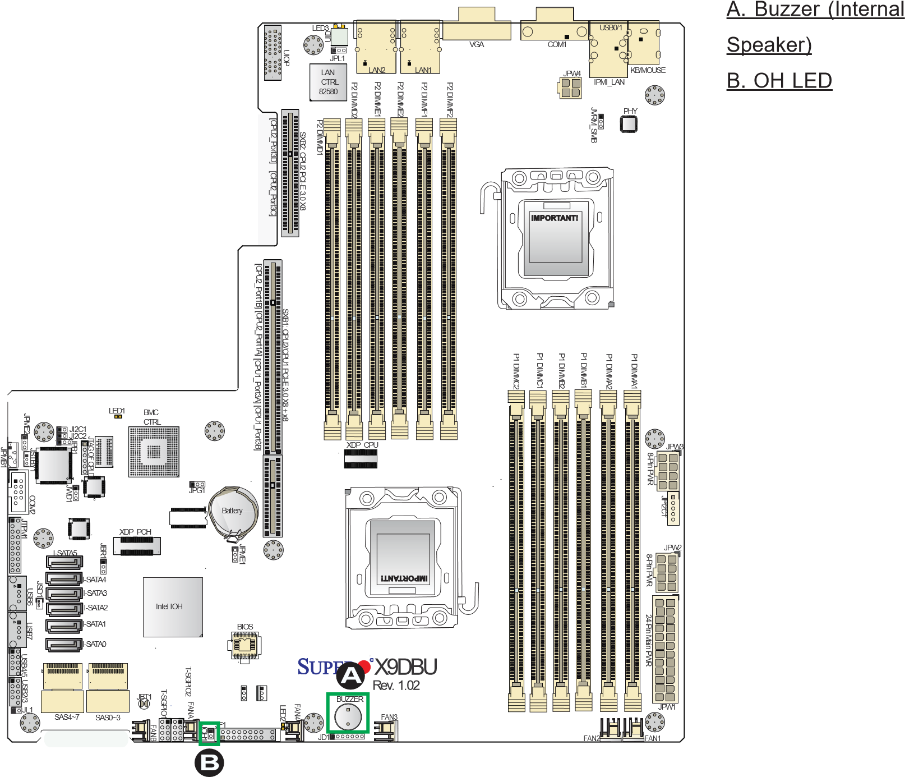
Используйте этот разъём для повышения производительности системы и безопасности данных. Описание контактов см. в таблице.
| Контакт | Назначение | Тип сигнала | Технические характеристики |
|---|---|---|---|
| 1 | IPMB_DAT (Data) | Биполярный | Линия данных I2C (3.3V, 4.7kΩ подтяжка) |
| 2 | Ground | - | Общий провод |
| 3 | IPMB_CLK (Clock) | Тактовый | Частота до 400 кГц |
| 4 | NC (No Connect) | - | Не используется |
xxxxxxxxxx[Контроллер IPMI]├── 1 (DAT) → SDA (синий провод)├── 2 (GND) → Земля (черный)└── 3 (CLK) → SCL (зеленый)Кабельная инфраструктура:
Диагностика проблем:
xxxxxxxxxx# Проверка связи через ipmitool:ipmitool -I bmc channel info 1Интеграционные сценарии:
Критически важно:
- Избегайте переполюсовки контактов 1 и 3
- Не подключайте питание к контакту 4
- При использовании переходников I2C→IPMB проверьте уровень логики
Для расширенной конфигурации см. "IPMI Developer's Guide" на Supermicro Documentation.
Разъём шины системного управления для IPMI 2.0 расположен на JIPMB. Подключите сюда соответствующий кабель, чтобы использовать подключение I2C IPMB в вашей системе.
IPMB (Intelligent Platform Management Bus) - специализированный интерфейс для:
| Параметр | Значение |
|---|---|
| Стандарт | IPMI 2.0 / I2C |
| Скорость | 100 кГц (стандарт) / 400 кГц (Turbo) |
| Напряжение | 3.3V |
| Макс. ток | 50 мА |
Для подключения:
Диагностика:
xxxxxxxxxx# Проверка связи через IPMI:ipmitool bmc infoИнтеграция:
Совместим с:
Важно: Не подключайте периферийные устройства напрямую - только совместимые контроллеры управления!
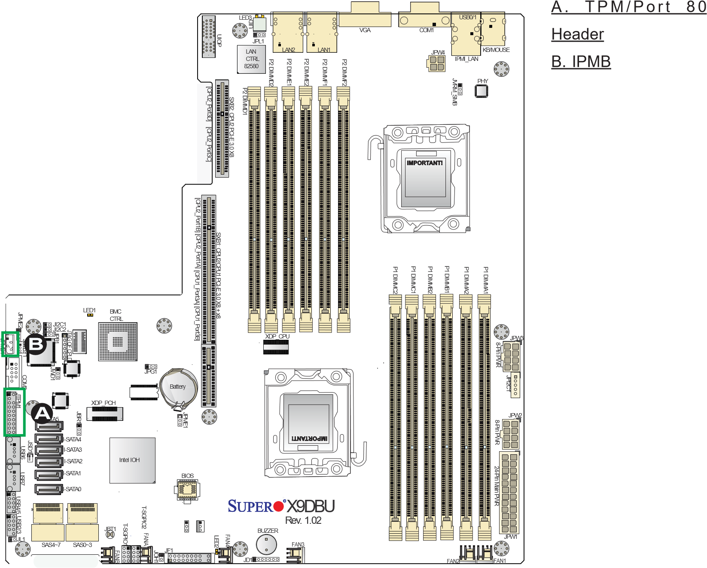
| Контакт | Назначение | Стандарт | Применение |
|---|---|---|---|
| 1 | +3.3V Standby | SMBus 2.0 | Питание датчиков |
| 2 | SMB_CLK | I2C | Тактовая линия (100-400 кГц) |
| 3 | SMB_DATA | I2C | Линия данных |
| 4 | Ground | - | Общий провод |
Функционал:
Пример использования:
xxxxxxxxxx# Чтение показаний через ipmitool:ipmitool sdr list | grep -i "PSU"| Контакт | Назначение | Характеристики |
|---|---|---|
| 1 | +5VSB | Дежурное питание |
| 2 | Ground |
Особенности:
| Контакт | Назначение | Протокол |
|---|---|---|
| 1 | CLK | SGPIO v2 |
| 2 | DATA | |
| 3 | LOAD | |
| 4 | Ground |
Применение:
xxxxxxxxxx[Мониторинг]├── JPI2C1 → Датчики БП│ ├── 1: +3.3V (красный)│ └── 3: SDA (желтый)
[Резервное питание]└── JSTBY1 → BMC ├── 1: +5VSB (оранжевый) └── 2: GND (черный)
[SGPIO]├── T-SGPIO1 → Backplane 1└── T-SGPIO2 → Backplane 2Для точного мониторинга:
Диагностика:
xxxxxxxxxx# Проверка дежурного питания:ipmitool dcmi power readingБезопасность:
Важно! Для систем с горячим резервированием БП требуется подключение всех SMB-разъемов к обоим блокам питания.
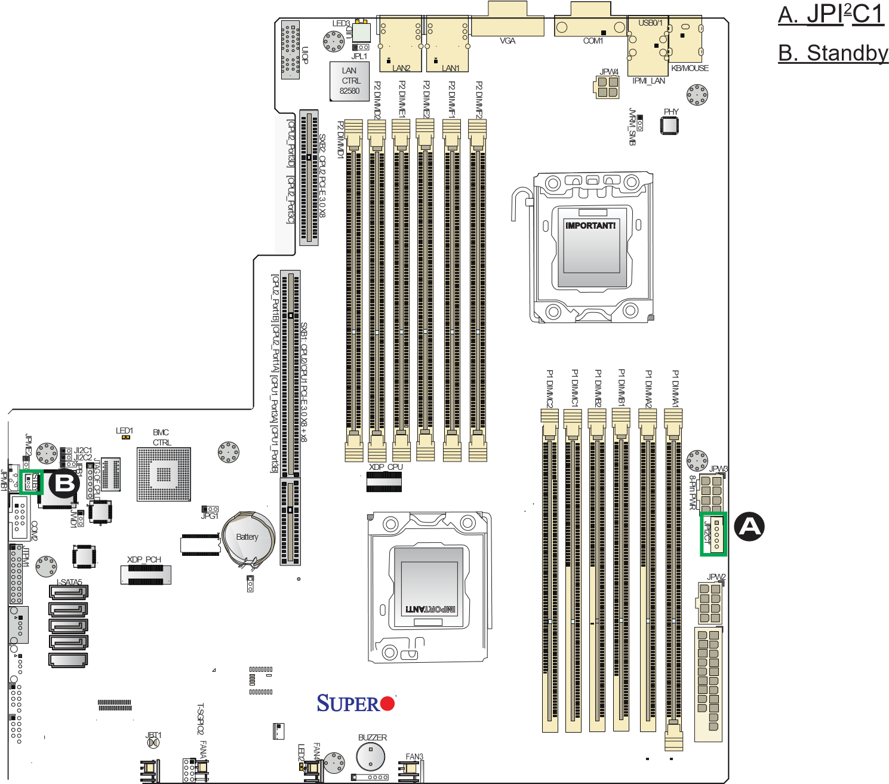
Разъём питания для устройств SATA DOM
(Disk On Module) расположен на JSD1. Подключите сюда соответствующий кабель для питания устройств DOM.
На разъёме JD1 контакты 1–3 используются для светодиодной индикации питания, а контакты 4–7 — для динамика. Описание контактов см. в таблицах справа. Обратите внимание:
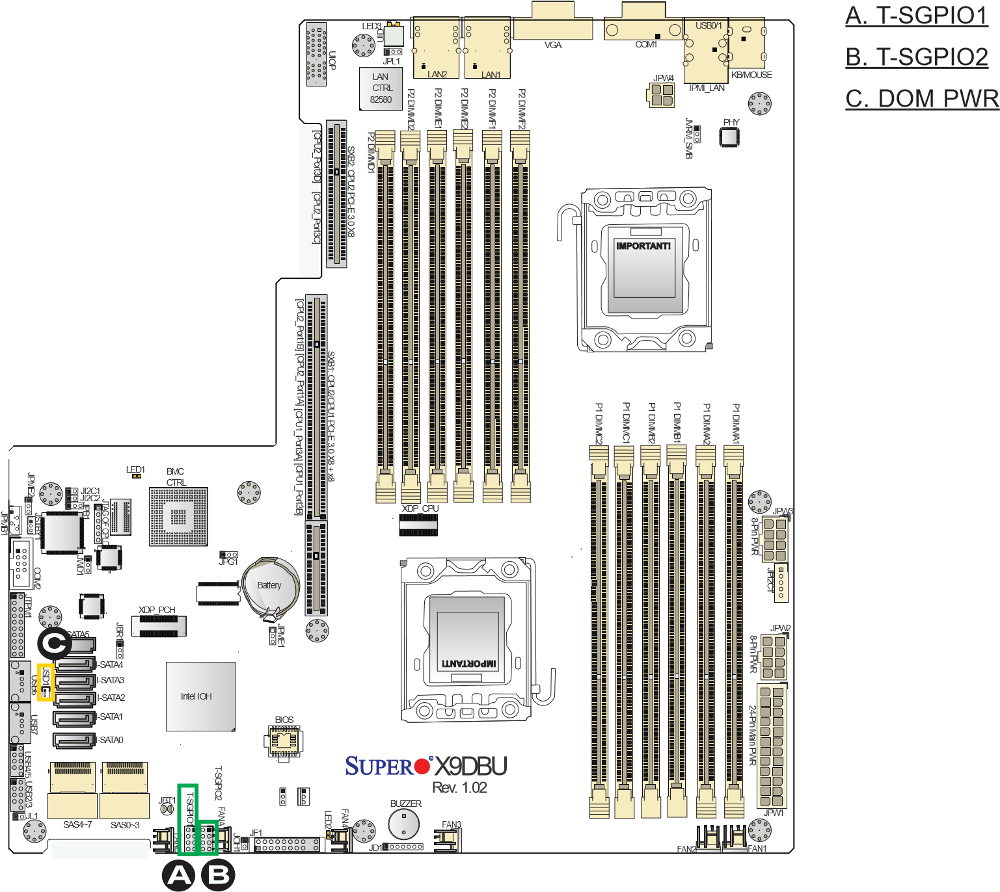
| Контакт | Назначение | Цвет провода | Макс. ток |
|---|---|---|---|
| 1 | +5V | Красный | 1.5A |
| 2 | Ground | Черный | - |
| 3 | Ground | Черный | - |
Особенности подключения:
| Контакт | Назначение | Цвет провода |
|---|---|---|
| 1 | Анод (+) | Зеленый |
| 2 | Катод (-) | Белый |
| 3 | Не используется | - |
Характеристики:
| Конфигурация | Назначение | Особенности |
|---|---|---|
| Pins 4-5 | Внешний спикер | Поддержка PC-спикера |
| Pins 6-7 | Внутренний спикер | Требуется перемычка |
Коды ошибок:
xxxxxxxxxx[DOM Устройство]├── 1 (+5V) → Красный провод└── 2-3 (GND) → Черные провода
[Индикатор питания]├── 1 (+) → Зеленый провод└── 2 (-) → Белый провод
[Спикер]├── Внешний: 4(+) 5(-)└── Внутренний: Установите перемычку 6-7Для DOM-устройств:
При проблемах со спикером:
xxxxxxxxxx# Тест через IPMI:ipmitool raw 0x6 0x4Диагностика индикатора:
Важно! Не подключайте DOM-устройства без заземления (контакт 2/3). Для промышленных решений используйте развязывающие трансформаторы.
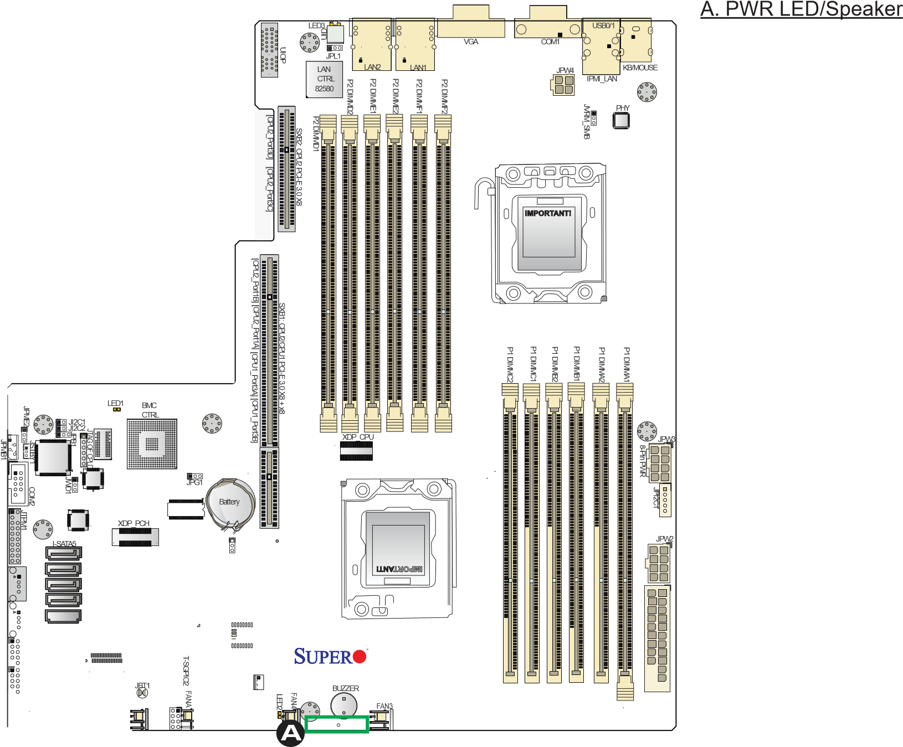
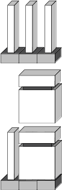
| Перемычка | Управляемые порты | Расположение на плате |
|---|---|---|
| JPL1 | LAN1 и LAN2 | Возле разъема RJ45 LAN1 |
| JPL2 | LAN3 и LAN4* | Возле чиста Intel I350 (*если есть) |
| Положение перемычки | Состояние портов | Визуализация |
|---|---|---|
| 1-2 (замкнуто) | Порты ВКЛЮЧЕНЫ (по умолчанию) | [■]■[ ] |
| 2-3 (замкнуто) | Порты ОТКЛЮЧЕНЫ | [ ]■[■] |
Для отключения портов:
Выключите сервер и отсоедините кабель питания
Переставьте перемычку с положения 1-2 на 2-3
Пример для LAN1/2:
xxxxxxxxxxДо: JPL1: [■]■[ ]После: JPL1: [ ]■[■]
Примечания:
В отключенном состоянии порты:
Для серверов с 4 портами требуется переключать оба джампера (JPL1 и JPL2)
xxxxxxxxxx[Перемычка LAN]├── Контакт 1: Vcc (3.3V)├── Контакт 2: Сигнал управления└── Контакт 3: GroundДля безопасности:
xxxxxxxxxx# Перед отключением проверьте активные соединения:ipmitool lan print 1При проблемах:
Если порты не включаются, проверьте:
Важно! Для 10G портов (если есть) используйте отдельные перемычки. Отключение портов через BIOS переопределяет настройки перемычек.
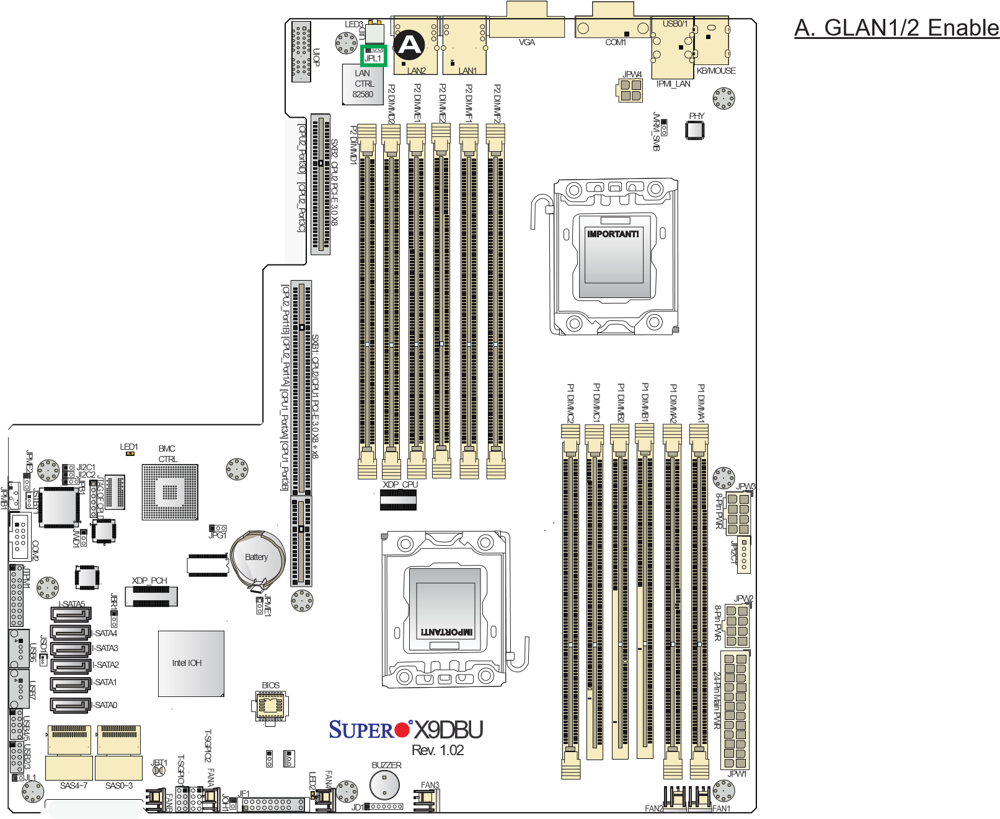
Назначение: Управление индикацией backplane для SATA/SAS
Распиновка:
xxxxxxxxxx1: CLK 2: DATA3: LOAD 4: GND
Применение:
| Контакт | Назначение |
|---|---|
| 1 | +5V |
| 2 | Ground |
Особенности:
| Контакты | Назначение |
|---|---|
| 1-3 | Power LED (зеленый) |
| 4-5 | Внешний спикер |
| 6-7 | Внутренний спикер* |
*Важно:
| Состояние | LAN1/LAN2 |
|---|---|
| 1-2 | Включены |
| 2-3 | Выключены |
По умолчанию: 1-2 (Enabled)
Метод сброса:
Последствия:
xxxxxxxxxx[Backplane]├── T-SGPIO1 → CLK/DATA/LOAD└── T-SGPIO2 → Резервный
[DOM Устройства]└── JSD1 → +5V/GND
[Индикация]├── JD1:│ ├── 1-3: Power LED│ └── 6-7: Jumper для спикераДля SATA DOM:
При сбросе CMOS:
xxxxxxxxxx# После сброса восстановите настройки:ipmitool raw 0x30 0x70 0x0c 0x01Диагностика спикера:
Внимание! Не замыкайте JBT1 при включенном питании — это может повредить южный мост. Для серверов с двойным BIOS используйте перемычку JBMC1 для переключения между чипами.
Расположение: Контактные площадки возле батарейки CMOS
Процедура сброса:
Полностью выключите сервер и отсоедините кабель питания
Извлеките батарейку CMOS (CR2032)
Замкните металлическим предметом (отвертка) оба контакта на 10 секунд:
xxxxxxxxxx[PAD1] ===(замыкание)===[PAD2]
Верните батарейку и включите питание
Последствия сброса:
Расположение: Рядом с разъемом TPM
Режимы работы:
| Положение | Функция | Применение |
|---|---|---|
| 1-2 | Hard Reset (по умолчанию) | Перезагрузка при зависании |
| 2-3 | NMI (Non-Maskable Interrupt) | Прерывание для диагностики |
| Open | Отключено | - |
Настройка через BIOS:
xxxxxxxxxxAdvanced → Watch Dog Configuration →- Timeout: [1-255 мин]- Action: [Reset/NMI]
Пример использования:
xxxxxxxxxx# Активация через IPMI (60 сек таймаут):ipmitool raw 0x06 0x24 0x00 0x00 0x00 0x3C| Особенность | JBT1 (CMOS Clear) | JWD1 (Watch Dog) |
|---|---|---|
| Физический доступ | Требуется | Не обязателен |
| Влияние на систему | Полный сброс | Контролируемый рестарт |
| Интеграция | Только аппаратная | BIOS/IPMI/ОС |
Для CMOS Clear:
Не замыкайте контакты при включенном питании!
После сброса потребуется:
xxxxxxxxxx# Восстановить настройки BMC:ipmitool lan set 1 ipsrc staticДля Watch Dog:
При NMI-режиме требуется драйвер в ОС
Логи событий сохраняются в:
xxxxxxxxxx/var/log/ipmi.log (Linux)Event Viewer → System (Windows)
Важно! Для промышленных решений с Watch Dog:
- Используйте внешний мониторинг через
ipmitool sel list- Настройте дублирование сигнала на релейный выход
| Положение | Состояние | Особенности |
|---|---|---|
| 1-2 | VGA Включен (по умолчанию) | Активирует встроенный видеоконтроллер Matrox G200eW |
| 2-3 | VGA Отключен | Освобождает ресурсы для PCIe-видеокарт |
Когда отключать:
| Положение | Состояние | Функционал |
|---|---|---|
| 1-2 | BMC Включен (по умолчанию) | Полная поддержка IPMI/KVM |
| 2-3 | BMC Отключен | Экономия энергии (~3W) |
Критические нюансы:
При отключении теряется:
| Положение | Режим | Применение |
|---|---|---|
| 1-2 | Нормальный (по умолчанию) | Стандартная работа |
| 2-3 | Recovery Mode | Обновление прошивки ME |
Процедура восстановления:
Установите перемычку 2-3
Загрузите образ через ipmitool:
xxxxxxxxxxipmitool raw 0x32 0xba 0x18 0x01После прошивки верните в положение 1-2
| Перемычка | По умолчанию | Риски отключения | Время восстановления |
|---|---|---|---|
| JPG1 | 1-2 | Потеря видеовыхода | Мгновенно |
| JPB1 | 1-2 | Потерь удаленного доступа | Требуется холодный перезапуск |
| JPME1 | 1-2 | Критично только при прошивке | До 15 минут |
Для VGA:
При использовании GPU NVIDIA Tesla устанавливайте 2-3
Проверьте вывод через IPMI KVM:
xxxxxxxxxxipmitool sol activateДля BMC:
Перед отключением сохраните настройки:
xxxxxxxxxxipmitool lan print > bmc_backup.txtДля ME Recovery:
Используйте только с официальными образами от Supermicro
При ошибках:
xxxxxxxxxxipmitool mc reset coldВажно! Все изменения перемычек требуют полного отключения питания. Для критичных систем рекомендуется дублирование управления через Redfish API.
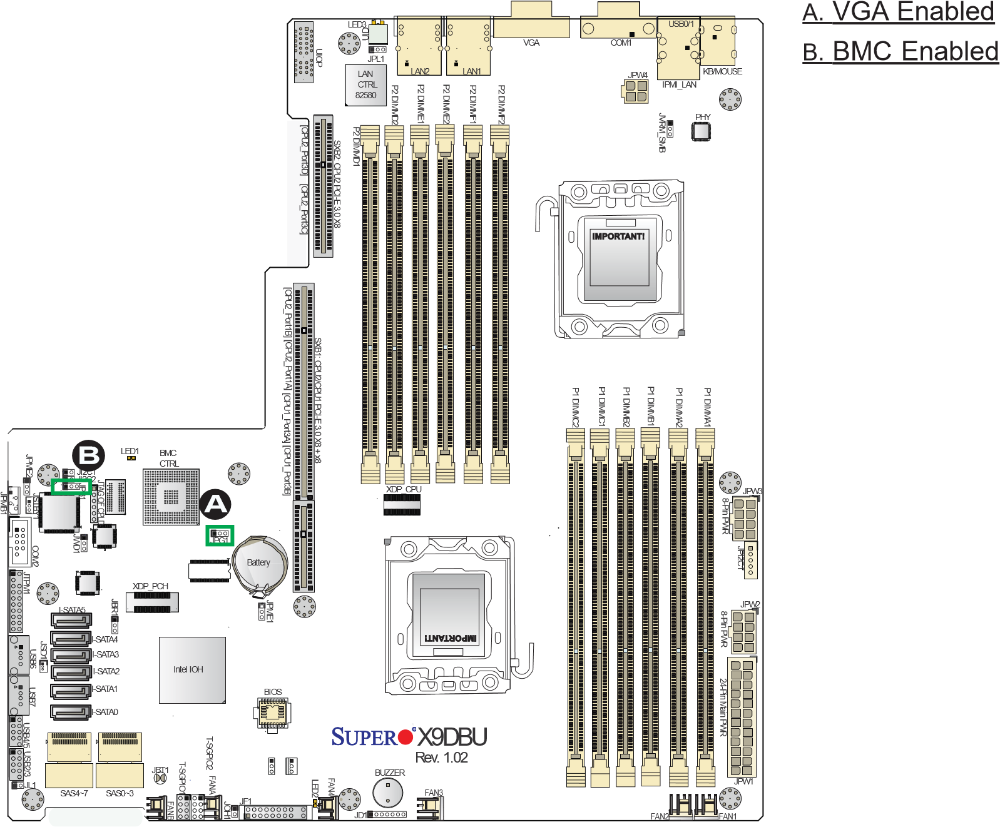
| Положение | Режим | Назначение |
|---|---|---|
| Open | Нормальный режим | Стандартная работа (по умолчанию) |
| 2-3 | Производительский режим | Отключает защиту SPI для: - Прошивки извне - Модификации скрытых настроек - Восстановления поврежденной прошивки |
Критически важно:
Процедура обновления:
xxxxxxxxxx# Через host-сервер (требует специального ПО производителя)flashrom -p internal:laptop=force_I_want_a_brick -w bios.rom| Перемычка | Положение | Назначение | Совместимость |
|---|---|---|---|
| JI2C1 | Open | Отключение I2C для PCIe x16 (по умолчанию) | Все видеокарты |
| Closed | Активация мониторинга через SMBus | Только серверные GPU (NVIDIA Tesla) | |
| JI2C2 | Open | Отключение I2C для PCIe x8 | RAID-контроллеры |
| Closed | Включение управления питанием | HBA-карты |
Когда активировать:
Предупреждение:
Активация с потребительскими видеокартами может вызвать конфликты!
| Характеристика | Manufacturer Mode (JPME2) | I2C to PCIe (JI2C1/2) |
|---|---|---|
| Безопасность | Критично снижена | Нейтрально |
| Сценарии | Recovery/Development | Мониторинг оборудования |
| Время активации | 10-15 мин (прошивка) | Мгновенно |
| Риски | Bricking материнской платы | Конфликты устройств |
Для JPME2:
Для JI2C1/2:
Проверяйте совместимость в Supermicro HCL
Диагностика подключения:
xxxxxxxxxx# Проверка устройств на шине I2Ci2cdetect -lОбщее:
Важно! Manufacturer Mode дает доступ к критическим разделам прошивки. Любые изменения в этом режиме аннулируют гарантию. Для повседневной эксплуатации все перемычки должны быть в положении по умолчанию.
2-9 Onboard LED Indicators
Порты LAN 1/2 расположены на объединительной плате ввода-вывода. Каждый порт Ethernet LAN имеет два светодиода. Желтый светодиод справа указывает на активность. Светодиод Link слева может гореть зеленым, янтарным или быть выключенным, указывая скорость. Подробнее см. в таблицах:
| Цвет | Состояние | Значение |
|---|---|---|
| Желтый | Мигание | Передача/прием данных |
| Выкл | - | Нет сетевой активности |
| Цвет | Скорость | Особые условия |
|---|---|---|
| Выкл | Нет связи или 10 Мбит | - |
| Зеленый | 100 Мбит | - |
| Янтарный | 1 Гбит | - |
| Зеленый | 1 Гбит | Только когда ВСЕ порты LAN1-4 работают на 1 Гбит |
Логика работы:
Подключение:
xxxxxxxxxx[Разъем на плате]├── Активность: Контакт 11 (JF1)└── Скорость: Контакт 13/14 (JF1)Диагностика проблем:
xxxxxxxxxx# Проверка статуса портов в Linux:ethtool eth0 | grep -E "Speed|Link"При отсутствии индикации:
Проверьте кабель (CAT5e/6)
Убедитесь, что порт включен в BIOS:
xxxxxxxxxxAdvanced → Network Stack Configuration → LAN1/2 Enable
Для серверных решений:
Важно! Янтарный цвет при 1 Гбит указывает на работу через copper-кабель, зеленый — при использовании SFP.
Link LED Activity LED
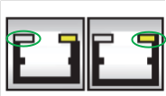
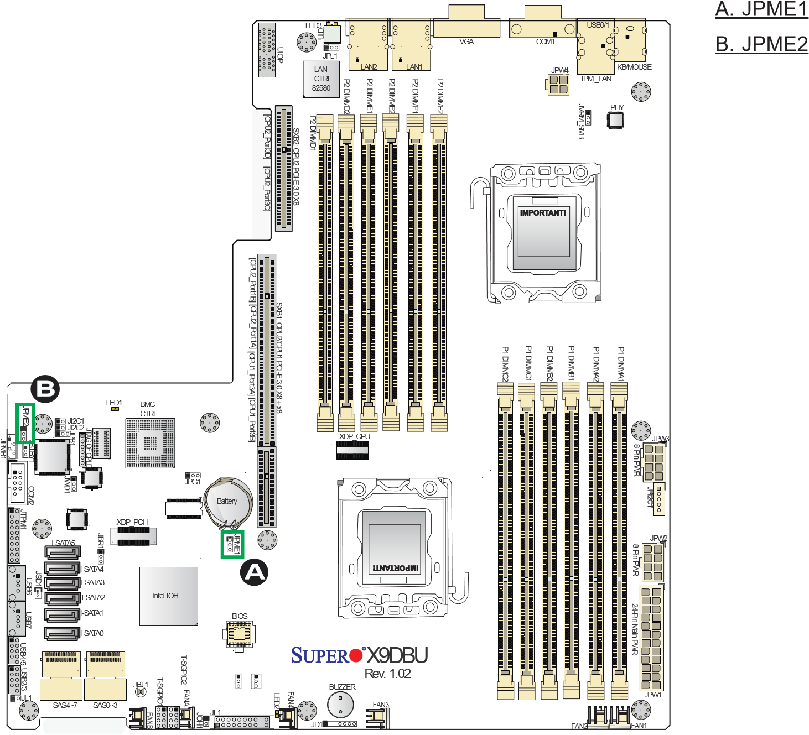
IPMI Dedicated LAN LEDs
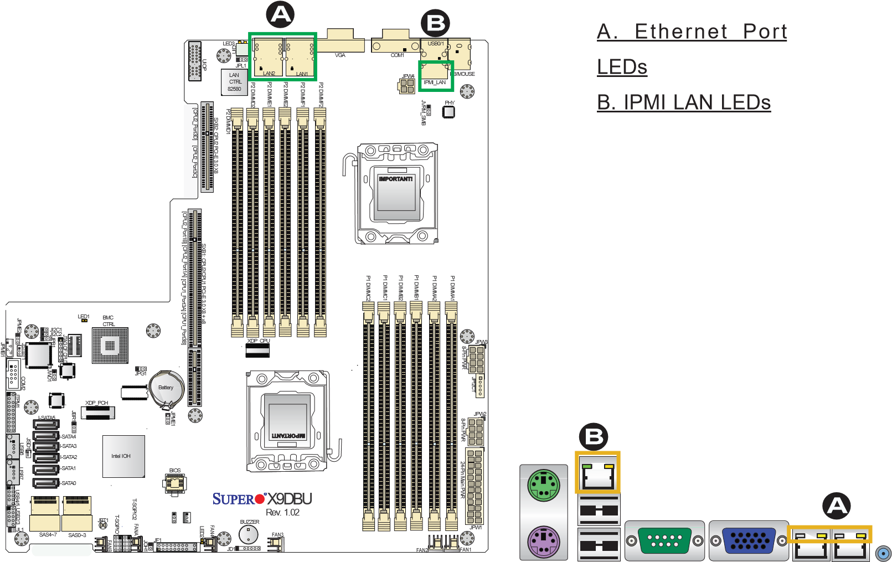
Помимо портов Gigabit Ethernet, над портами USB 0/1 на материнской плате также расположен выделенный порт IPMI LAN. Янтарный светодиод справа показывает активность, а зелёный светодиод слева — скорость соединения. Подробнее см. в таблицах.
IPMI LAN
Link LED Activity LED
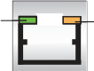
| Состояние | Значение | Технические параметры |
|---|---|---|
| Зеленый (горит) | Активное соединение 100 Мбит | Напряжение: 3.3V ±5% |
| Выключен | Нет соединения | Ток: 5 мА |
| Состояние | Значение | Частота мигания |
|---|---|---|
| Янтарный (мигает) | Передача данных | 10 Гц (при нагрузке) |
| Выключен | Нет активности | - |
Управление:
Распиновка (на плате):
xxxxxxxxxxЛевый LED: Контакт 1 (+), Контакт 2 (-)Правый LED: Контакт 3 (+), Контакт 4 (-)
Диагностика:
xxxxxxxxxx# Проверка статуса через IPMI:ipmitool lan print 1 | grep -E "Link|Active"При отсутствии индикации:
Проверьте кабель (требуется минимум CAT5)
Убедитесь, что IPMI включен в BIOS:
xxxxxxxxxxAdvanced → BMC Configuration → IPMI LAN Enable
Для удаленного мониторинга:
xxxxxxxxxx# Лог активности через syslog:logger -p user.notice "IPMI Link: $(ipmitool lan print 1 | grep Link)"Важно! Этот порт НЕ зависит от основной сетевой подсистемы. Для работы требуется:
- Отдельный IP-адрес
- Разрешенный доступ в настройках BMC (меню
Security → IPMI Filtering)
Onboard Power LED
Светодиод питания на плате расположен на материнской плате (LED2). Когда этот светодиод горит, система включена. Перед извлечением или установкой компонентов обязательно выключите систему и отсоедините шнур питания. Дополнительную информацию см. в таблицах справа.
| Цвет/Состояние | Режим работы системы | Описание |
|---|---|---|
| Выключен | Система отключена | Кабель питания не подключен или отсутствует дежурное напряжение |
| Зеленый (постоянно) | Система включена | Основное питание подано, система работает в нормальном режиме |
| Зеленый (частое мигание) | Режим ACPI S1 (Power On Suspend) | Процессор остановлен, оперативная память и устройства остаются под напряжением |
| Зеленый (медленное мигание) | Режим ACPI S3 (Suspend to RAM) | Состояние сохранено в RAM, большинство компонентов отключено |
Управление:
Частота мигания:
Подключение:
xxxxxxxxxxLE1:Анод (+) → 5VSB (красный провод)Катод (-) → Сигнал управления (зеленый провод)
При диагностике:
Если индикатор не горит при подключенном питании:
xxxxxxxxxx# Проверьте дежурное напряжение:ipmitool sensor list | grep "5VSB"Постоянное горение в S3 режиме указывает на ошибку ACPI
Для корректной работы:
В BIOS должны быть включены:
xxxxxxxxxxAdvanced → ACPI Settings → Suspend Mode [Auto]
Особенности состояний:
Важно! При обслуживании системы всегда дожидайтесь полного выключения индикатора перед отсоединением кабеля питания. Мигающие режимы указывают на активное состояние низкого энергопотребления.
Rear UID LED
Светодиод UID на задней панели расположен на материнской плате (LED3). Этот светодиод используется вместе с переключателем UID на задней панели для легкой идентификации системы, требующей обслуживания. Дополнительную информацию см. в разделе «Переключатель UID» на стр. 3–15.
| Цвет/Состояние | Операционная система | Статус системы |
|---|---|---|
| Синий (постоянно горит) | Windows OS | Сервер идентифицирован |
| Синий (мигает) | Linux OS | Сервер идентифицирован |
Управление индикацией:
ipmid)Активация:
Физическая кнопка UID на задней панели
Команда IPMI:
xxxxxxxxxx# Активировать (вкл/выкл)ipmitool raw 0x3C 0x0A 0x01 0x00Электрические параметры:
В дата-центре:
Поиск конкретного сервера в стойке
Обслуживание без отключения:
xxxxxxxxxx# Включить на 5 минут:ipmitool chassis identify 300При неисправностях:
Если индикатор не работает:
xxxxxxxxxx# Проверьте статус через IPMI:ipmitool raw 0x3C 0x0BWindows:
Через Supermicro System Manager (автоматическая активация при алертах)
Linux:
Настройка через systemd:
xxxxxxxxxx# /etc/systemd/system/uid-notify.service[Service]ExecStart=/usr/bin/ipmitool chassis identify forceВажно! Индикатор UID работает независимо от состояния ОС (через BMC). Для видимости в больших стойках рекомендуем использовать дополнительные внешние индикаторы.
BMC Heartbeat LED
Светодиод BMC Heartbeat расположен на материнской плате (LED1). Мигание LED1 означает, что BMC работает нормально. Дополнительную информацию см. в таблице справа. 2-10 Разъемы Serial ATA
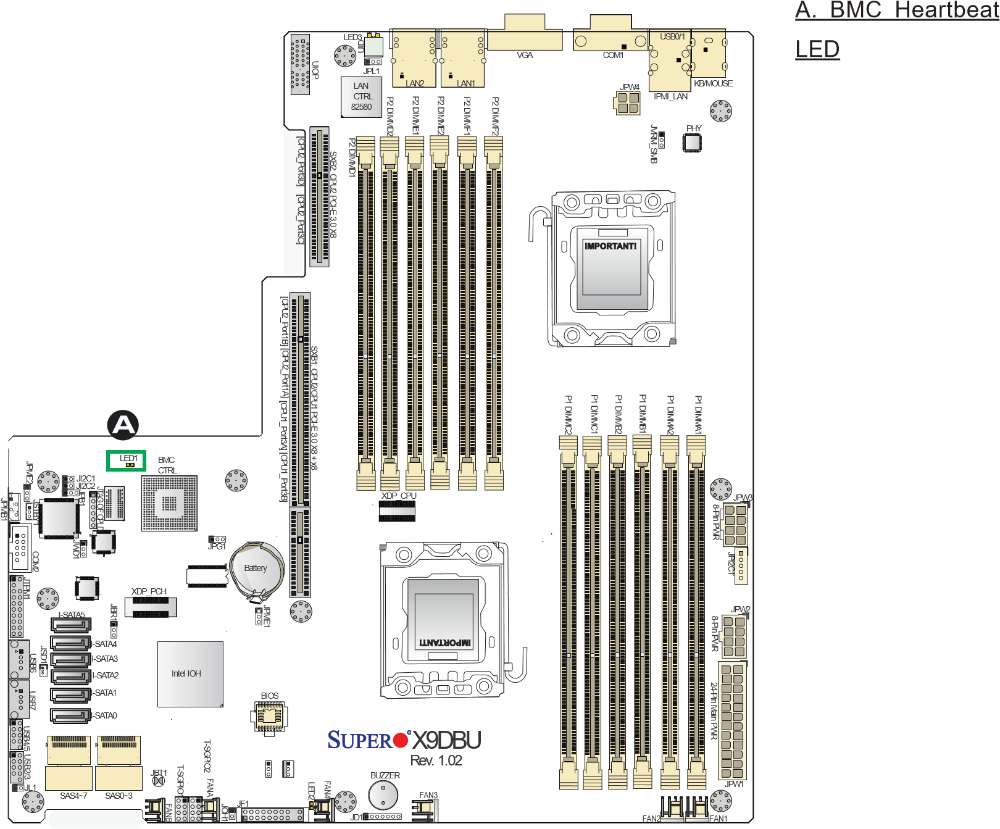
| Состояние индикатора | Статус BMC | Дополнительная информация |
|---|---|---|
| Зеленый: мигает | BMC работает нормально | Частота мигания: 1 Гц (±0.2 Гц) |
| Не горит | BMC неактивен/отключен | Требуется проверка питания и прошивки |
| Зеленый: постоянно | Ошибка BMC | Необходима перезагрузка BMC |
Параметры мигания:
Диагностика:
xxxxxxxxxx# Проверка статуса BMC через IPMI:ipmitool mc info | grep "Firmware Revision"Подключение:
При отсутствии мигания:
Проверьте подключение кабеля питания BMC
Обновите прошивку:
xxxxxxxxxxipmitool fw update bmc_firmware.binЕсли горит постоянно:
Выполните холодный сброс BMC:
xxxxxxxxxxipmitool mc reset coldДля мониторинга:
xxxxxxxxxx# Настройка оповещений при сбоях:ipmitool sel elist | grep "BMC Firmware Error"Важно! Индикатор Heartbeat является критическим для мониторинга работоспособности BMC. При изменении режима мигания (учащение/прекращение) немедленно проверьте систему.
На материнской плате расположено шесть портов Serial ATA (I-SATA0~ISATA 5), включая четыре порта SATA2 и два порта SATA3. Эти порты обеспечивают последовательную передачу сигналов, которая быстрее, чем у Parallel ATA. Описание контактов см. в таблице справа.
Порты SAS
Восемь портов Serial Attached SCSI (SSATA/SAS 0~3, SAS 4~7) расположены на материнской плате X9DBU-3F/X9DBU-iF и обеспечивают последовательную передачу данных. Эти порты поддерживаются микросхемой Intel C606. Описание контактов см. в таблице справа.
| Состояние | Статус системы | Меры безопасности |
|---|---|---|
| Горит | Система включена | Всегда отключайте питание перед обслуживанием |
| Выключен | Система выключена/в режиме ожидания | - |
| Состояние | Функционал | Связанный компонент |
|---|---|---|
| Синий (горит) | Идентификация системы активна | Кнопка UID (стр. 3-15) |
| Мигает | Активная сессия удаленного управления | IPMI/KVM |
| Выключен | Нормальная работа | - |
| Состояние | Статус BMC | Диагностика |
|---|---|---|
| Мигает (1 Гц) | Нормальная работа | Стандартный режим |
| Горит/Не горит | Ошибка BMC | Проверьте версию прошивки IPMI |
| Порты | Стандарт | Макс. скорость | Поддерживаемые режимы |
|---|---|---|---|
| I-SATA0/1 | SATA III | 6 Гбит/с | AHCI/RAID 0,1,5,10 |
| I-SATA2-5 | SATA II | 3 Гбит/с | Совместимость с IDE-режимом |
Ключевые особенности:
| Группа портов | Контроллер | Особенности |
|---|---|---|
| SSATA/SAS0-3 | Intel C606 | SAS 2.0 (6 Гбит/с), совместимость с SATA III |
| SAS4-7 | Intel C606 | Выделенные SAS 2.0, поддержка STP |
Дополнительные возможности:
Управление питанием:
Оптимизация хранилища:
xxxxxxxxxx# Проверка скорости подключения в Linux:for i in {0..5}; do cat /sys/class/ata_link/link$i/sata_spd; doneМониторинг BMC:
xxxxxxxxxx# Проверка состояния:ipmitool mc info | grep -i "firmware revision"Важно! Чипсет C606 поддерживает гибридные конфигурации (SSD+HDD), но не рекомендуется объединять потребительские SATA-диски с корпоративными SAS-накопителями в одном RAID-массиве из-за разницы в производительности. Для максимальной производительности SAS используйте сертифицированные Supermicro диски.
Конфигурация портов:
| Порты | Версия SATA | Макс. скорость | Режимы работы |
|---|---|---|---|
| I-SATA0/1 | SATA III | 6 Гбит/с | AHCI, RAID 0/1/5/10 |
| I-SATA2-5 | SATA II | 3 Гбит/с | Legacy IDE, AHCI |
Ключевые особенности:
Распиновка SATA-портов:
xxxxxxxxxx1: Ground 2: TX+ 3: TX-4: Ground 5: RX- 6: RX+7: Ground
Конфигурация портов:
| Группа портов | Тип | Скорость | Особенности |
|---|---|---|---|
| SSATA/SAS0-3 | SAS 2.0 | 6 Гбит/с | Совместимость с SATA III |
| SAS4-7 | SAS 2.0 | 6 Гбит/с | Полноценные SAS-порты |
Функционал:
Для SATA:
xxxxxxxxxx# Проверка скорости в Linux:for i in {0..5}; do cat /sys/class/ata_link/link$i/sata_spd; doneДля SAS:
Используйте сертифицированные Supermicro диски
Приоритет для критичных нагрузок:
xxxxxxxxxx# Мониторинг через ipmitool:ipmitool sensor list | grep -i "sas_temp"Настройка RAID:
Требуется активация в BIOS:
xxxxxxxxxxAdvanced → SATA Configuration → RAID Mode
Документация по HostRAID: Intel SATA HostRAID Guide
| Характеристика | SATA III | SAS 2.0 |
|---|---|---|
| Макс. скорость | 6 Гбит/с | 6 Гбит/с |
| Поддержка SSD | Да | Да |
| Горячая замена | Да (с настройкой) | Да |
| Длина кабеля | до 1 м | до 10 м |
Важно! Для SAS-подключений используйте кабели с экранированием. Смешивание SATA и SAS в одном RAID-массиве не рекомендуется.
| Контакт | Обозначение | Тип сигнала | Описание |
|---|---|---|---|
| 1 | Ground | Земля | Общий проводник |
| 2 | TX_P | Передача (положительный) | Дифференциальная пара передачи |
| 3 | TX_N | Передача (отрицательный) | |
| 4 | Ground | Земля | Экранирование |
| 5 | RX_N | Прием (отрицательный) | Дифференциальная пара приема |
| 6 | RX_P | Прием (положительный) | |
| 7 | Ground | Земля | Дополнительное экранирование |
Скорость передачи:
Дифференциальные пары:
Электрические требования:
xxxxxxxxxx[Устройство (HDD/SSD)]├── 2 (TX_P) → Красный провод├── 3 (TX_N) → Белый провод├── 5 (RX_N) → Синий провод└── 6 (RX_P) → Желтый провод
[Заземление]├── 1,4,7 → Черные проводаДля стабильной работы:
Диагностика проблем:
xxxxxxxxxx# Проверка линка в Linux:dmesg | grep -i "sata link"При подключении SAS:
Убедитесь в поддержке SSP (Serial SCSI Protocol)
Для SATA-устройств активируйте STP в BIOS:
xxxxxxxxxxAdvanced → SAS Configuration → STP Support
Важно! Не подключайте питание к сигнальным контактам. Для горячей замены SAS-устройств используйте специальные backplane-разъемы с поддержкой SES-2.
Порты Serial ATA
На материнской плате расположено шесть портов Serial ATA (I-SATA0~ISATA 5), включая четыре порта SATA2 и два порта SATA3. Эти порты обеспечивают последовательную передачу сигналов, которая быстрее, чем у Parallel ATA. Описание контактов см. в таблице справа.
Порты SAS
Восемь последовательных портов SCSI (SSATA/SAS 0~3, SAS 4~7) расположены на материнской плате X9DBU-3F/X9DBU-iF и обеспечивают последовательное подключение. Эти порты поддерживаются микросхемой Intel C606. Описание контактов см. в таблице справа.
Примечание: Для получения дополнительной информации о настройке SATA HostRAID см. руководство пользователя Intel SATA HostRAID, размещенное на нашем веб-сайте.
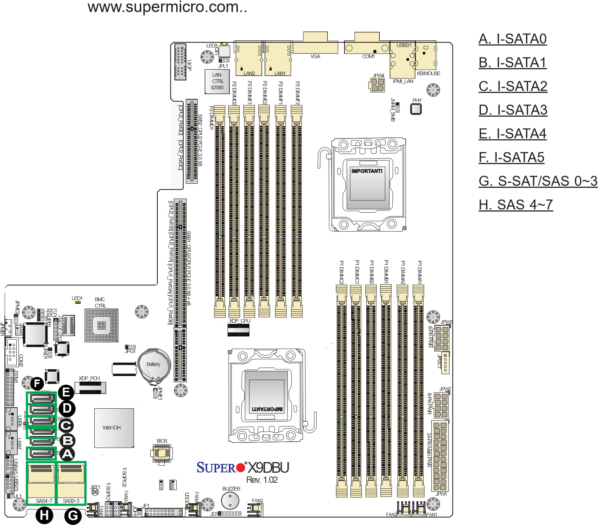
Chapter 3: Troubleshooting
Используйте следующие процедуры для устранения неисправностей. Если после выполнения всех шагов проблема не решена, обратитесь к разделам "Процедуры технической поддержки" и/или "Возврат оборудования на обслуживание".
Внимание: Всегда отключайте кабель питания перед установкой, заменой или изменением любых аппаратных компонентов.
Если система не проходит POST или не реагирует после включения:
Проверьте звуковые сигналы:
Извлеките все компоненты, особенно модули памяти, и проверьте звуковые сигналы.
Запустите систему с одним модулем памяти для диагностики.
При звуковых сигналах о проблемах с памятью:
3-2 Technical Support Procedures
Прежде чем обращаться в службу технической поддержки, выполните следующие действия. Также, пожалуйста, обратите внимание, что Supermicro, будучи производителем материнских плат, также продает материнские платы по своим каналам, поэтому лучше всего сначала обратиться к своему дистрибьютору или реселлеру за услугами по устранению неполадок. Они должны быть осведомлены о любых возможных проблемах с конкретной конфигурацией системы, которая была вам продана.
Перед обращением в службу технической поддержки ознакомьтесь с разделами «Процедуры устранения неполадок» и «Часто задаваемые вопросы» (FAQ) в этой главе или ознакомьтесь с часто задаваемыми вопросами на нашем веб-сайте (http://www.supermicro.com/).
Обновления iOS можно загрузить с нашего веб-сайта (http://www.supermicro. com).
Если вам по-прежнему не удаётся решить проблему, предоставьте следующую информацию при обращении в Supermicro за технической поддержкой: com).
• Модель материнской платы и номер версии печатной платы • Дата/версия BIOS (отображается на начальном экране при первой загрузке системы). • Конфигурация системы
Пример формы обращения в службу технической поддержки можно найти на нашем веб-сайте (http://www.supermicro.com). • Дистрибьюторам: для получения немедленной помощи, пожалуйста, подготовьте номер своего счёта при звонке в наш отдел технической поддержки. С нами можно связаться по электронной почте support@supermicro.com.ation
Перед обращением в техническую поддержку выполните следующие шаги.
Примечание: Как производитель материнских плат, Supermicro распространяет продукцию через партнеров. Рекомендуем сначала обратиться к вашему поставщику или дистрибьютору — они могут располагать информацией о возможных проблемах в вашей конфигурации.
Если проблема не решена, при обращении укажите:
Шаблон запроса в техподдержку доступен на supermicro.com.
Для дистрибьюторов:
Готовьте номер вашего аккаунта для ускорения обработки запроса.
Контакты:
Рекомендации:
Для критичных инцидентов приложите:
ipmitool sel elist). При проблемах с железом:
xxxxxxxxxx# Соберите данные о системе (Linux):dmidecode -t baseboard > mobo_info.txtipmitool mc info > bmc_info.txt
3-3 Извлечение и установка батарейки
Извлечение батарейки:
Важно! Утилизируйте батарейки правильно:
Установка новой батарейки:
3-4 Frequently Asked Questions
Какие типы памяти поддерживаются?
Как обновить BIOS?
Скачайте последнюю версию с supermicro.com
Для обновления:
Не прерывайте процесс обновления!
Примечание: Встроенный чип BIOS нельзя извлечь. При необходимости ремонта обратитесь в сервисный центр Supermicro.
3-5 Returning Merchandise for Service
Требования:
Процедура возврата:
Важно! Гарантия не распространяется на:
Для ускорения обработки запроса вы можете оформить RMA онлайн на сайте Supermicro.
Chapter 4: AMI BIOS
4-1 Introduction
В этой главе описывается утилита настройки AMI BIOS для материнских плат X9DBU-3F/X9DBU-iF, а также приводятся инструкции по работе с интерфейсом BIOS.
Интерфейс BIOS состоит из двух основных областей:
Левая часть - список доступных для настройки параметров
Правая часть - справочная информация и подсказки по управлению
Используются следующие "горячие клавиши":
Важно!
4-2 Main Setup
Главный экран BIOS отображает основную информацию о системе и является отправной точкой для всех настроек.
System Information - информация о системе:
Advanced - расширенные настройки:
Boot - настройки загрузки:
Security - параметры безопасности:
Save & Exit - сохранение настроек:
Примечание: Параметры, выделенные жирным шрифтом, являются значениями по умолчанию.
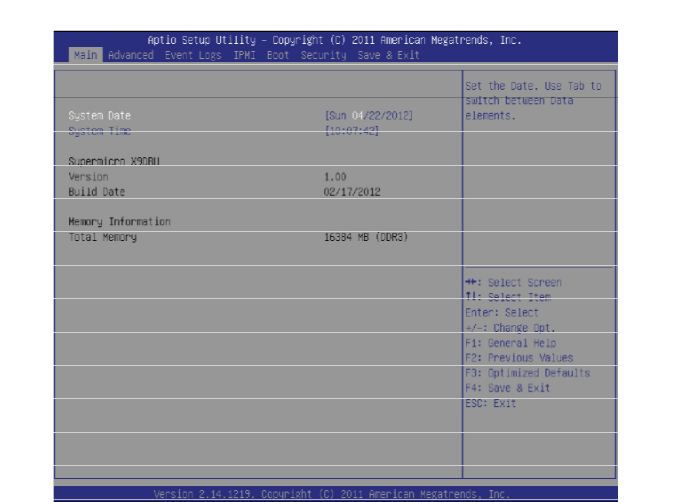
Вот перевод текста с сохранением оригинальных названий пунктов BIOS и технических терминов:
System Date
Этот пункт отображает системную дату в формате День ММ/ДД/ГГ (например, Ср 10/12/2012).
System Time
Этот пункт отображает системное время в формате ЧЧ:ММ:СС (например, 15:32:52).
Supermicro X9DBU
Version
Этот пункт отображает версию BIOS ROM, используемого в системе.
Build Date
Этот пункт отображает дату сборки BIOS ROM.
Memory Information
Total Memory
Отображает общий объем памяти, доступный в системе.
Используйте клавиши со стрелками для выбора Advanced Setup и нажмите Enter, чтобы открыть следующие пункты меню.
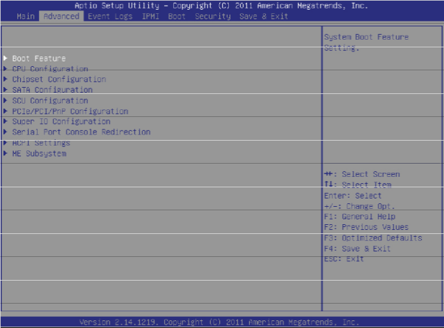
Quiet Boot
Эта функция позволяет выбрать отображение экрана загрузки: сообщения POST или логотип производителя. Выберите Disabled, чтобы отображать сообщения POST, или Enabled, чтобы показывать логотип.
AddOn ROM Display Mode
Определяет режим отображения Option ROM. Force BIOS использует настройки BIOS, а Keep Current сохраняет текущие настройки.
Bootup Num-Lock
Определяет состояние клавиши Numlock при включении. Варианты: Off и On.
Wait For 'F1' If Error
Если выбрано Enabled, система будет ждать нажатия F1 при возникновении ошибки.
Если включено (Enabled), BIOS позволяет адаптерам с ROM загружаться с подключенных дисков. Если отключено (Disabled), такие диски не будут загрузочными.
Если включено, BIOS повторяет попытку загрузки после неудачной первой попытки.
Watch Dog Function
При включении система автоматически перезагрузится после 5 минут бездействия при критической ошибке.
Power Button Function
Instant Off — выключение при нажатии кнопки питания. 4 Seconds Override — выключение при удержании кнопки 4 секунды.
Restore on AC Power Loss
Определяет поведение системы после восстановления питания:
Отображает информацию о процессоре и позволяет настроить его параметры.
Socket 1/2 CPU Information
Показывает данные о процессоре:
Hyper-threading
Включение/отключение технологии Hyper-threading.
Active Processor Cores
Определяет количество активных ядер (All, 1, 2).
Execute-Disable Bit
Защита от вредоносного кода. Рекомендуется Enabled.
Intel® Virtualization Technology
Включение аппаратной виртуализации.
Power Technology
Режимы энергосбережения: Disabled, Energy Efficient, Custom.
EIST (Enhanced Intel SpeedStep)
Автоматическая регулировка частоты и напряжения.
C-States (C1E, C3, C6, C7)
Управление энергосберегающими состояниями процессора.
Intel VT-d
Включение виртуализации для устройств ввода-вывода.
Memory Mode
Режимы работы памяти:
DDR Speed
Принудительное изменение частоты памяти (например, Force DDR3-1600).
Legacy USB Support
Поддержка USB-устройств в Legacy-режиме.
EHCI Hand-Off
Необходимо для ОС без поддержки EHCI.
Перевод сохраняет оригинальные названия пунктов BIOS (например, Execute-Disable Bit, Hyper-threading) и технические термины, близко следуя структуре исходного текста.
Информация о системе
Отображает текущую дату системы в формате [День недели] [ММ/ДД/ГГГГ] (например, Ср 10/12/2012). Поддерживается батарейкой CMOS при выключенном питании.
Отображает текущее время системы в 24-часовом формате [ЧЧ:ММ:СС] (например, 15:32:52). Также поддерживается батарейкой CMOS.
Отображает точную версию прошивки BIOS, установленной на материнской плате (например, "X9DBU 3.4a"). Важно для проверки совместимости.
Показывает дату компиляции текущей версии BIOS в формате ММ/ДД/ГГГГ.
Отображает суммарный объем ОЗУ, обнаруженный BIOS при POST (например, "32768 МБ" для 32 ГБ).
Управление отображением экрана POST:
Определяет, как опциональные ROM (например, RAID-контроллеры) отображают свою инициализацию:
Устанавливает состояние клавиши NumLock при включении:
Управление обработкой ошибок во время POST:
Управление распознаванием загрузочных устройств:
Функция восстановления системы:
Управление поведением кнопки питания:
Определяет поведение при восстановлении питания:
Активация логических процессоров:
Управление количеством ядер:
Защита памяти:
Поддержка аппаратной виртуализации:
Метод работы ОЗУ:
Управление тактовой частотой памяти:
Шаблоны доступа к памяти:
Обслуживание памяти:
Исправление ошибок на лету:
Поддержка виртуализации ввода-вывода:
Распределение линий:
Управление поколением порта:
Коррекция сигнала:
При выборе этого подменю AMI BIOS автоматически определяет наличие устройств IDE/SATA и отображает следующие параметры:
SATA Port0~SATA Port5
BIOS отображает статус каждого SATA-порта, определенный во время POST.
Режим SATA
Настройка режима работы SATA-контроллера:
Дополнительные параметры при выборе IDE Mode:
Контроллер Serial-ATA 0/1
Управление SATA-контроллерами:
По умолчанию:
Дополнительные настройки:
Агрессивное управление питанием (ALPM)
Горячее подключение (Hot Plug) для Port 0~5
Последовательный запуск дисков (Staggered Spin Up)
Настройки для RAID-массивов:
Горячее подключение для Port 0~5
Аналогично AHCI Mode.
Контроллер хранилища
SCU Option ROM
SCU Port 0~7
Автоматическое определение подключенных устройств.
Примечание:
Приоритет PCI ROM
Выбор типа загрузочного ROM:
Таймер задержки PCI
Установка задержки для PCI-устройств (в циклах): 32, 64, 96, 128, 160, 192, 224, 248
Декодирование выше 4G
Генерация PERR#/SERR#
Максимальный размер пакета (Payload)
Максимальный размер запроса (Read Request)
Поддержка ASPM
Управление энергопотреблением PCI-E:
Внимание! Включение ASPM может вызвать нестабильность некоторых устройств!
Выбор Option ROM для сетевой загрузки
Загрузка Option ROM для LAN1/LAN2
По умолчанию:
Приоритет видеовыхода (VGA Priority)
Выбор основного графического адаптера:
Используемый чип Super IO
Отображает модель мультиконтроллера (например, Nuvoton NCT6779D).
Активация порта
Настройки устройства
Auto: Автоматическое определение адресов
Ручная настройка:
IO=3F8h; IRQ=4 (стандарт для COM1) Режим работы
Активация
По умолчанию:
Тип терминала
Скорость (Bits Per Second)
9600, 19200, 38400, 57600, 115200
Биты данных
7 или 8 бит
Контроль четности
Стоп-биты
1 или 2
Управление потоком
Дополнительные функции
Разрешение экрана
Настройки Putty
Эмуляция терминалов: VT100, LINUX, XTERMR6 и др.
Перенаправление для Out-of-Band управления
Управление аварийными сервисами (EMS)
Параметры для удаленного управления через последовательный порт при критических сбоях системы.
Выбор COM-порта для аварийного доступа:
Эмуляция терминального интерфейса:
Настройка скорости последовательного порта:
Примечание: Скорость должна совпадать на обоих концах соединения.
Контроль переполнения буфера:
Отображаются текущие настройки:
Состояние сна ACPI
S1 (CPU Stop Clock) - Минимальное энергопотребление:
Suspend Disabled - Отключение режима сна
Активация архитектуры неоднородного доступа к памяти:
Enabled - Использование высокочастотного таймера:
Disabled - Стандартный таймер
(Доступно при обнаружении TPM-устройства BIOS)
Поддержка TPM
Примечание: Для работы необходимо физическое включение TPM через перемычку.
Состояние TPM
Запланированная операция (Pending Operation)
Важно! Для выполнения запланированной операции система автоматически перезагрузится.
Статус активации TPM
Отображает текущее состояние поддержки TPM:
Активность TPM
Показывает, активен ли в данный момент модуль TPM:
Статус владения TPM
Отображает информацию о владении TPM:
Данный раздел отображает поддержку технологии Trusted Execution Technology (TXT) следующими компонентами:
Поддержка TXT (LT-SX):
Для корректной работы технологии Intel TXT должны быть включены следующие функции:
(Примечание: Если какая-либо из зависимостей не выполнена, TXT не будет работать.)
Данный раздел отображает информацию о версиях компонентов Intel ME:
(Примечание: ME обеспечивает удаленное управление и безопасность системы.)
4-4 Event Logs
Используйте эту функцию для настройки параметров журнала событий.
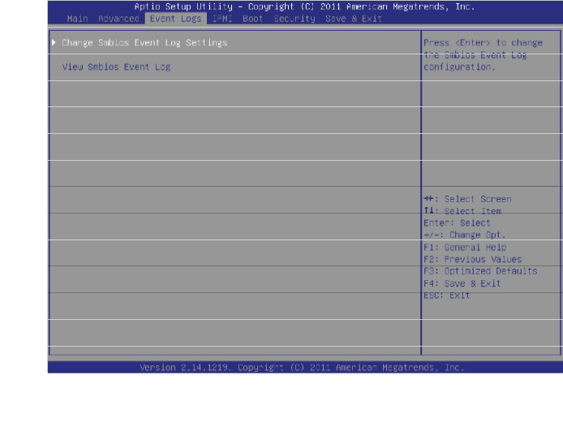
Журнал событий SMBIOS
Поддержка журналирования ошибок в реальном времени
Порог исправимых ошибок памяти
Устанавливает максимальное количество исправимых ошибок памяти перед записью в журнал (по умолчанию: 10)
Поддержка журналирования ошибок PCI
Очистка журнала событий
Действие при заполнении журнала
Журналирование событий загрузки
MECI (Шаг счетчика повторяющихся событий)
Определяет, через сколько повторений идентичной ошибки создается новая запись (диапазон: 1-255, по умолчанию: 1)
METW (Временное окно для счетчика событий)
Устанавливает интервал времени (в минутах) между записями одинаковых событий (диапазон: 0-99, по умолчанию: 60)
Позволяет просматривать записи журнала с указанием:
Используйте эту функцию для настройки параметров интеллектуального интерфейса управления платформой (IPMI).
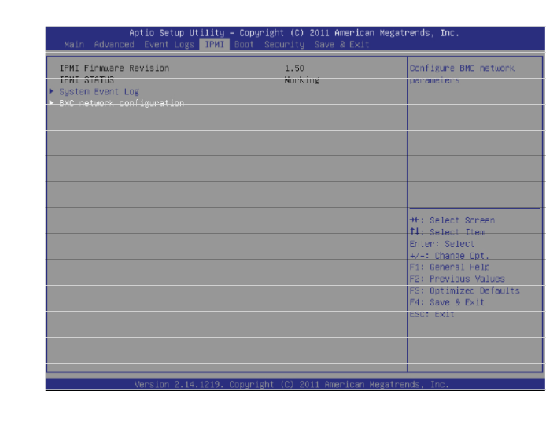
Версия прошивки IPMI
Этот пункт указывает версию прошивки IPMI, используемую в вашей системе.
IPMI Status
Состояние IPMI
Этот пункт показывает состояние прошивки IPMI, установленной в вашей системе.
Enabling/Disabling Options
Включение/отключение параметров
SEL Components
Выберите «Включено» для регистрации всех системных событий при загрузке. Доступные параметры: «Включено» и «Отключено».
Erasing Settings
Стирание настроек
Erase SEL
Выберите «Да, при следующем сбросе», чтобы очистить все журналы системных событий при следующей перезагрузке системы. Выберите «Да, при каждом сбросе», чтобы очистить все журналы системных событий при каждой перезагрузке системы. Выберите «Нет», чтобы сохранять все журналы системных событий после каждой перезагрузки системы. Доступные параметры:
Нет, «Да, при следующем сбросе» и «Да, при каждом сбросе».
When SEL is Full
При заполнении журнала SEL
Эта функция позволяет пользователю определить, что должна делать BIOS при заполнении журнала системных событий. Выберите «Стереть немедленно», чтобы стереть все события в журнале при заполнении журнала системных событий. Доступные параметры: «Ничего не делать» и «Стереть немедленно». Пользовательские параметры ведения журнала EFI
Custom EFI Logging Options
Log EFI Status Codes
Ведение журнала кодов состояния EFI
Выберите «Enabled», чтобы регистрировать коды состояния EFI (Extensible Firmware Interface), коды ошибок или коды выполнения. Доступны следующие варианты: «Enabled» и «Disabled».
Примечание: После внесения изменений в настройки обязательно перезагрузите систему, чтобы изменения вступили в силу.
BMC Network Configuration
Конфигурация сети BMC
LAN Channel 1: Эта функция позволяет пользователю настроить параметры порта LAN1.
Update IPMI LAN Configuration
Обновить конфигурацию локальной сети IPMI
Эта функция позволяет BIOS применять любые изменения IP/MAC-адреса при следующей загрузке системы. Если для параметра установлено значение «Да», любые изменения, внесенные в указанные ниже параметры, вступят в силу после перезагрузки системы. Доступны варианты «Нет» и «Да».
Configuration Address Source
Источник адреса конфигурации
Эта функция позволяет пользователю выбрать источник IP-адреса для этого компьютера. Если выбран вариант «Статический», вам потребуется знать IP-адрес этого компьютера и ввести его в систему вручную. Если выбран протокол DHCP, BIOS выполнит поиск сервера DHCP (Dynamic Host Configuration Protocol) в сети, к которой подключен компьютер, и запросит следующий доступный IP-адрес для этого компьютера. Доступные варианты: DHCP и Static. Следующие пункты назначаются IP-адреса автоматически, если выбран DHCP, или могут быть настроены вручную, если выбран статический режим.
Station IP Address
Этот пункт отображает IP-адрес станции для этого компьютера. Он должен быть представлен в десятичном и четырёхзначном формате, разделённом точками (например, 192.168.10.253).
Subnet Mask
Этот пункт отображает подсеть, к которой принадлежит этот компьютер. Значение каждого трехзначного числа, разделённого точками, не должно превышать 255.
Station MAC Address
Этот пункт отображает MAC-адрес станции для этого компьютера. MAC-адреса представляют собой шесть двузначных шестнадцатеричных чисел.
Gateway IP Address
Этот пункт отображает IP-адрес шлюза для этого компьютера. Это должно быть в десятичном формате и в формате четверки чисел, разделенных точками (например, 192.168.10.253).
4-6 Загрузка Это подменю позволяет пользователю настроить следующие параметры загрузки системы:
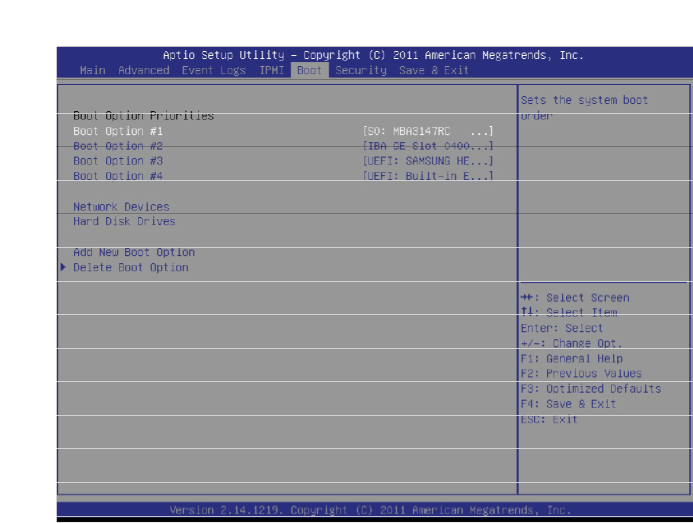
Boot Option Priorities
(Приоритет загрузочных устройств)
Boot Option #1/Boot Option #2/Boot Option #3
(Вариант загрузки №1/№2/№3)
Назначение приоритета загрузочных устройств.
Network Devices, Hard Disk Drives
(Сетевые устройства, жесткие диски)
Определение порядка загрузки для:
Add New Boot Option
(Добавить вариант загрузки)
Добавление нового EFI-загрузочного устройства в список.
Delete Boot Option
(Удалить вариант загрузки)
Исключение устройства из списка загрузки:
(Безопасность)
Это меню позволяет настроить параметры безопасности системы.
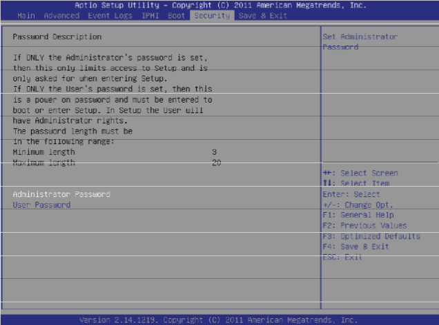
(Пароль администратора)
Установка пароля для доступа к утилите настройки BIOS.
(Пароль пользователя)
Установка пароля для:
(Сохранение и выход)
Это подменю позволяет настроить параметры сохранения и выхода из BIOS.
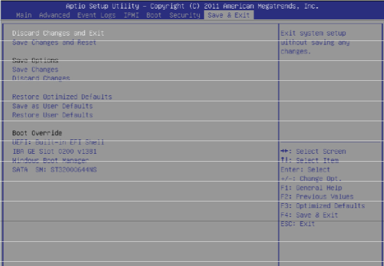
(Отменить изменения и выйти)
Выход из BIOS без сохранения изменений
После выбора появится диалоговое окно:
(Сохранить изменения и перезагрузить)
Сохранение настроек и перезагрузка системы
Диалоговое окно:
(Параметры сохранения)
(Сохранить изменения)
Сохранение текущих настроек без выхода из BIOS
Диалоговое окно:
(Отменить изменения)
Сброс всех изменений к предыдущим значениям
Диалоговое окно:
(Загрузить оптимизированные настройки)
Восстановление оптимальных параметров BIOS
Диалоговое окно:
(Сохранить как пользовательские настройки)
Сохранение текущей конфигурации как персонального шаблона
Диалоговое окно:
(Восстановить пользовательские настройки)
Загрузка ранее сохраненных пользовательских параметров
Диалоговое окно:
(Принудительная загрузка)
Во время выполнения POST (самотестирования при включении), которое проводится при каждой загрузке системы, могут возникать ошибки.
Фатальные ошибки обычно передаются через серию звуковых сигналов. Номера в списке соответствуют количеству сигналов для каждой конкретной ошибки.
| Количество сигналов / Светодиод | Сообщение об ошибке | Описание |
|---|---|---|
| 1 сигнал | Refresh | Готово к загрузке |
| 5 коротких + 1 длинный сигнал | Memory error | Память не обнаружена в системе |
| 5 сигналов | No Con-In или No Con-Out | Con-In: USB- или PS/2-клавиатура, PCI или Serial Console Redirection, IPMI KVM/SOL. Con-Out: Видеоконтроллер, PCI или Serial Console Redirection, IPMI SOL |
| Сигнал | Ошибка |
|---|---|
| Непрерывный сигнал | System OH (Перегрев системы) |
После установки операционной системы появится экран, подобный показанному ниже. Теперь вы можете приступить к установке дополнительных программ и драйверов, которые ещё не были установлены.
Чтобы прочитать файлы Readme (дополнительную информацию) для каждого компонента, нажмите на иконку с изображением листа бумаги.
Для установки нажмите на иконку компьютера рядом с нужным пунктом.
Если требуется создать дискету с драйверами накопителя, загрузитесь с Driver CD и установите в BIOS:
Инструкции по установке Windows OS доступны на нашем сайте:
🔗 http://www.supermicro.com/support/manuals/
Примечание:
SuperDoctor® III — это инструмент для мониторинга системы (температура, напряжения, вентиляторы).
SuperDoctor® III — это веб-инструмент для удалённого и локального управления системой. Локальная версия называется SD III Client. Программа позволяет отслеживать состояние системы, включая температуру CPU, напряжения и скорость вентиляторов.
ADMIN (логин и пароль). Важно:
SuperDoctor® III Interface Display Screen-I (Health Information)
Interface Display Screen-II (Remote Control)
SuperDoctor II предназначен для мониторинга аппаратного состояния серверов Supermicro под Linux.
🔹 Официальная страница загрузки:
→ https://www.supermicro.com/products/accessories/software/SuperDoctorII.cfm
На странице загрузки выберите:
✔ Подходящую версию (32-bit или 64-bit)
✔ Совместимую с вашей версией Linux (RHEL, CentOS, Ubuntu и др.)
xxxxxxxxxxwget [URL_скачивания_пакета.rpm]sudo rpm -ivh SuperDoctorII-*.rpmxxxxxxxxxxwget [URL_скачивания_пакета.deb]sudo dpkg -i SuperDoctorII-*.debПосле установки:
xxxxxxxxxxsudo /opt/SuperDoctorII/sdii-gui # Графический интерфейс sudo /opt/SuperDoctorII/sdii-cmd # Консольная версия Чтобы SuperDoctor II запускался автоматически:
xxxxxxxxxxsudo systemctl enable sdii-service # (если доступен) ⚠ Проверьте совместимость с вашей версией ОС перед установкой.
⚠ Для работы требуются права root или sudo.
⚠ Если возникают ошибки зависимостей, установите недостающие пакеты (например, libssl).
Нужна помощь? Обратитесь в Supermicro Support:
🔗 https://www.supermicro.com/support/
(Дисклеймер, продолжение)
Продукты Supermicro не предназначены для использования в:
Supermicro не несёт ответственности за использование продукции в подобных условиях. Покупатель использует такие продукты на свой страх и риск и обязуется возмещать ущерб, связанный с их применением в опасных сферах.
Если у вас возникнут вопросы, обратитесь к документации или на сайт поддержки Supermicro.